Chapter 9: Joints¶
Introduction¶
Chapter Outline: Chapter Objectives
After this chapter, you will be able to:
- Discuss both functional and structural classifications for body joints
- Describe the characteristic features for fibrous, cartilaginous, and synovial joints and give examples of each
- Define and identify the different body movements
- Discuss the structure of specific body joints and the movements allowed by each
- Explain the development of body joints
The adult human body has 206 bones, and with the exception of the hyoid bone in the neck, each bone is connected to at least one other bone. Joints are the location where bones come together. Many joints allow for movement between the bones. At these joints, the articulating surfaces of the adjacent bones can move smoothly against each other. However, the bones of other joints may be joined to each other by connective tissue or cartilage. These joints are designed for stability and provide for little or no movement. Importantly, joint stability and movement are related to each other. This means that stable joints allow for little or no mobility between the adjacent bones. Conversely, joints that provide the most movement between bones are the least stable. Understanding the relationship between joint structure and function will help to explain why particular types of joints are found in certain areas of the body.
The articulating surfaces of bones at stable types of joints, with little or no mobility, are strongly united to each other. For example, most of the joints of the skull are held together by fibrous connective tissue and do not allow for movement between the adjacent bones. This lack of mobility is important, because the skull bones serve to protect the brain. Similarly, other joints united by fibrous connective tissue allow for very little movement, which provides stability and weight-bearing support for the body. For example, the tibia and fibula of the leg are tightly united to give stability to the body when standing. At other joints, the bones are held together by cartilage, which permits limited movements between the bones. Thus, the joints of the vertebral column only allow for small movements between adjacent vertebrae, but when added together, these movements provide the flexibility that allows your body to twist, or bend to the front, back, or side. In contrast, at joints that allow for wide ranges of motion, the articulating surfaces of the bones are not directly united to each other. Instead, these surfaces are enclosed within a space filled with lubricating fluid, which allows the bones to move smoothly against each other. These joints provide greater mobility, but since the bones are free to move in relation to each other, the joint is less stable. Most of the joints between the bones of the appendicular skeleton are this freely moveable type of joint. These joints allow the muscles of the body to pull on a bone and thereby produce movement of that body region. Your ability to kick a soccer ball, pick up a fork, and dance the tango depend on mobility at these types of joints.
9.1 Classification of Joints¶
Learning Objectives
By the end of this section, you will be able to:
- Distinguish between the functional and structural classifications for joints
- Describe the three functional types of joints and give an example of each
- List the three types of diarthrodial joints
A joint, also called an articulation, is any place where adjacent bones or bone and cartilage come together (articulate with each other) to form a connection. Joints are classified both structurally and functionally. Structural classifications of joints take into account whether the adjacent bones are strongly anchored to each other by fibrous connective tissue or cartilage, or whether the adjacent bones articulate with each other within a fluid-filled space called a joint cavity. Functional classifications describe the degree of movement available between the bones, ranging from immobile, to slightly mobile, to freely moveable joints. The amount of movement available at a particular joint of the body is related to the functional requirements for that joint. Thus immobile or slightly moveable joints serve to protect internal organs, give stability to the body, and allow for limited body movement. In contrast, freely moveable joints allow for much more extensive movements of the body and limbs.
Structural Classification of Joints¶
The structural classification of joints is based on whether the articulating surfaces of the adjacent bones are directly connected by fibrous connective tissue or cartilage, or whether the articulating surfaces contact each other within a fluid-filled joint cavity. These differences serve to divide the joints of the body into three structural classifications. A fibrous joint is where the adjacent bones are united by fibrous connective tissue. At a cartilaginous joint, the bones are joined by hyaline cartilage or fibrocartilage. At a synovial joint, the articulating surfaces of the bones are not directly connected, but instead come into contact with each other within a joint cavity that is filled with a lubricating fluid. Synovial joints allow for free movement between the bones and are the most common joints of the body.
Functional Classification of Joints¶
The functional classification of joints is determined by the amount of mobility found between the adjacent bones. Joints are thus functionally classified as a synarthrosis or immobile joint, an amphiarthrosis or slightly moveable joint, or as a diarthrosis, which is a freely moveable joint (arthroun = “to fasten by a joint”). Depending on their location, fibrous joints may be functionally classified as a synarthrosis (immobile joint) or an amphiarthrosis (slightly mobile joint). Cartilaginous joints are also functionally classified as either a synarthrosis or an amphiarthrosis joint. All synovial joints are functionally classified as a diarthrosis joint.
Synarthrosis¶
An immobile or nearly immobile joint is called a synarthrosis. The immobile nature of these joints provide for a strong union between the articulating bones. This is important at locations where the bones provide protection for internal organs. Examples include sutures, the fibrous joints between the bones of the skull that surround and protect the brain (Figure 9.2), and the manubriosternal joint, the cartilaginous joint that unites the manubrium and body of the sternum for protection of the heart.
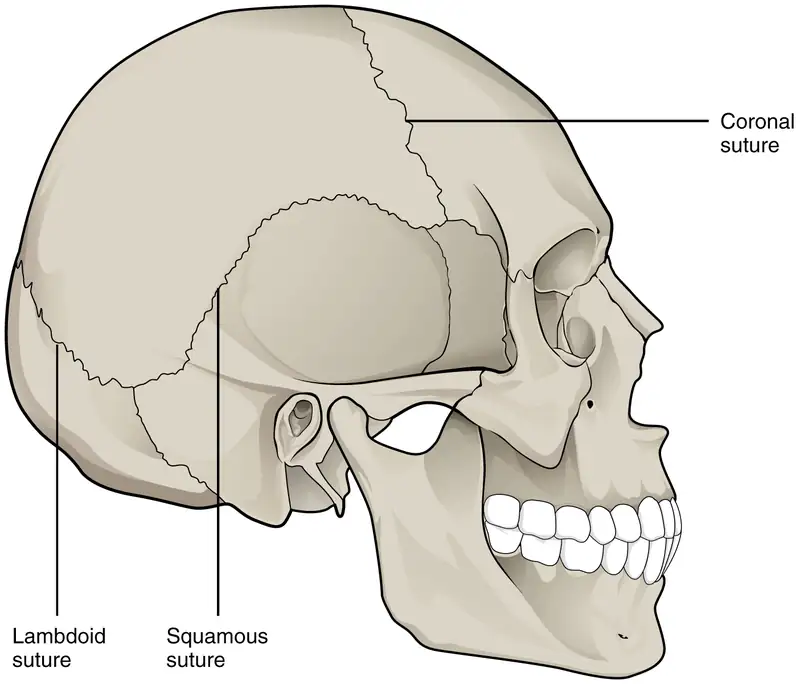
Amphiarthrosis¶
An amphiarthrosis is a joint that has limited mobility. An example of this type of joint is the cartilaginous joint that unites the bodies of adjacent vertebrae. Filling the gap between the vertebrae is a thick pad of fibrocartilage called an intervertebral disc (Figure 9.3). Each intervertebral disc strongly unites the vertebrae but still allows for a limited amount of movement between them. However, the small movements available between adjacent vertebrae can sum together along the length of the vertebral column to provide for large ranges of body movements.
Another example of an amphiarthrosis is the pubic symphysis of the pelvis. This is a cartilaginous joint in which the pubic regions of the right and left hip bones are strongly anchored to each other by fibrocartilage. This joint normally has very little mobility. The strength of the pubic symphysis is important in conferring weight-bearing stability to the pelvis.
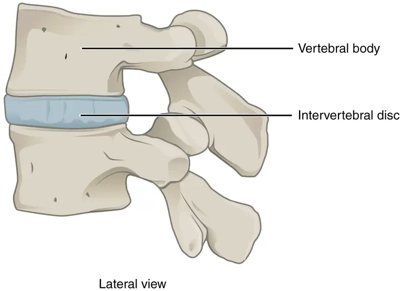
Diarthrosis¶
A freely mobile joint is classified as a diarthrosis. These types of joints include all synovial joints of the body, which provide the majority of body movements. Most diarthrotic joints are found in the appendicular skeleton and thus give the limbs a wide range of motion. These joints are divided into three categories, based on the number of axes of motion provided by each. An axis in anatomy is described as the movements in reference to the three anatomical planes: transverse, frontal, and sagittal. Thus, diarthroses are classified as uniaxial (for movement in one plane), biaxial (for movement in two planes), or multiaxial joints (for movement in all three anatomical planes).
A uniaxial joint only allows for a motion in a single plane (around a single axis). The elbow joint, which only allows for bending or straightening, is an example of a uniaxial joint. A biaxial joint allows for motions within two planes. An example of a biaxial joint is a metacarpophalangeal joint (knuckle joint) of the hand. The joint allows for movement along one axis to produce bending or straightening of the finger, and movement along a second axis, which allows for spreading of the fingers away from each other and bringing them together. A joint that allows for the several directions of movement is called a multiaxial joint (polyaxial or triaxial joint). This type of diarthrotic joint allows for movement along three axes (Figure 9.4). The shoulder and hip joints are multiaxial joints. They allow the upper or lower limb to move in an anterior-posterior direction and a medial-lateral direction. In addition, the limb can also be rotated around its long axis. This third movement results in rotation of the limb so that its anterior surface is moved either toward or away from the midline of the body.
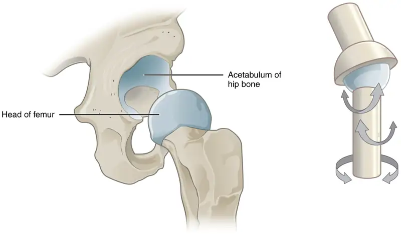
9.2 Fibrous Joints¶
Learning Objectives
By the end of this section, you will be able to:
- Describe the structural features of fibrous joints
- Distinguish between a suture, syndesmosis, and gomphosis
- Give an example of each type of fibrous joint
At a fibrous joint, the adjacent bones are directly connected to each other by fibrous connective tissue, and thus the bones do not have a joint cavity between them (Figure 9.5). The gap between the bones may be narrow or wide. There are three types of fibrous joints. A suture is the narrow fibrous joint found between most bones of the skull. At a syndesmosis joint, the bones are more widely separated but are held together by a narrow band of fibrous connective tissue called a ligament or a wide sheet of connective tissue called an interosseous membrane. This type of fibrous joint is found between the shaft regions of the long bones in the forearm and in the leg. Lastly, a gomphosis is the narrow fibrous joint between the roots of a tooth and the bony socket in the jaw into which the tooth fits.
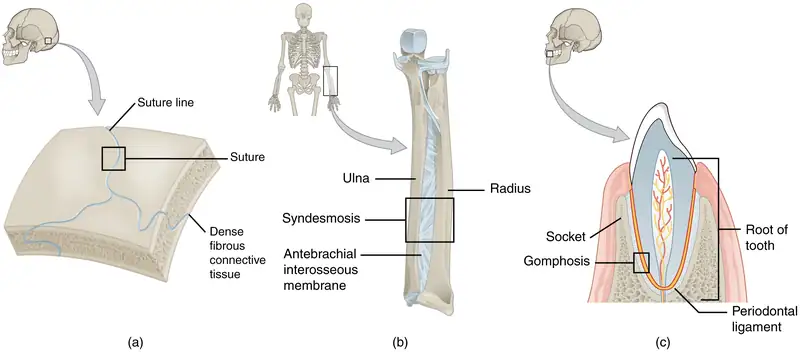
Suture¶
All the bones of the skull, except for the mandible, are joined to each other by a fibrous joint called a suture. The fibrous connective tissue found at a suture (“to bind or sew”) strongly unites the adjacent skull bones and thus helps to protect the brain and form the face. In adults, the skull bones are closely opposed and fibrous connective tissue fills the narrow gap between the bones. The suture is frequently convoluted, forming a tight union that prevents most movement between the bones. (See Figure 9.5a.) Thus, skull sutures are functionally classified as a synarthrosis, although some sutures may allow for slight movements between the cranial bones.
In newborns and infants, the areas of connective tissue between the bones are much wider, especially in those areas on the top and sides of the skull that will become the sagittal, coronal, squamous, and lambdoid sutures. These broad areas of connective tissue are called fontanelles (Figure 9.6). During birth, the fontanelles provide flexibility to the skull, allowing the bones to push closer together or to overlap slightly, thus aiding movement of the infant’s head through the birth canal. After birth, these expanded regions of connective tissue allow for rapid growth of the skull and enlargement of the brain. The fontanelles greatly decrease in width during the first year after birth as the skull bones enlarge. When the connective tissue between the adjacent bones is reduced to a narrow layer, these fibrous joints are now called sutures. At some sutures, the connective tissue will ossify and be converted into bone, causing the adjacent bones to fuse to each other. This fusion between bones is called a synostosis (“joined by bone”). Examples of synostosis fusions between cranial bones are found both early and late in life. At the time of birth, the frontal and maxillary bones consist of right and left halves joined together by sutures, which disappear by the age of 14–15 in females and 15–16 in males as the halves fuse together to form a single bone. Late in life, the sagittal, coronal, and lambdoid sutures of the skull will begin to ossify and fuse, causing the suture line to gradually disappear.
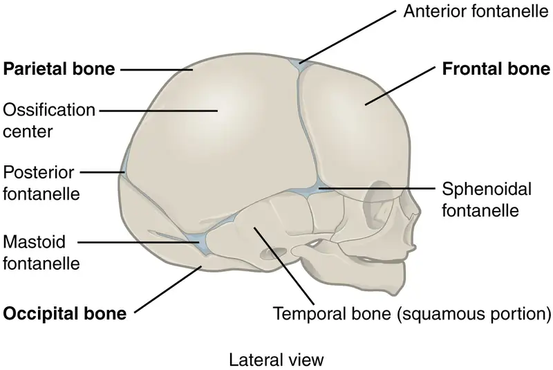
Syndesmosis¶
A syndesmosis (“fastened with a band”) is a type of fibrous joint in which two parallel bones are united to each other by fibrous connective tissue. The gap between the bones may be narrow, with the bones joined by ligaments, or the gap may be wide and filled in by a broad sheet of connective tissue called an interosseous membrane.
In the forearm, the wide gap between the shaft portions of the radius and ulna bones are strongly united by an interosseous membrane (see Figure 9.5b). Similarly, in the leg, the shafts of the tibia and fibula are also united by an interosseous membrane. In addition, at the distal tibiofibular joint, the articulating surfaces of the bones lack cartilage and the narrow gap between the bones is anchored by fibrous connective tissue and ligaments on both the anterior and posterior aspects of the joint. Together, the interosseous membrane and these ligaments form the tibiofibular syndesmosis.
The syndesmoses found in the forearm and leg serve to unite parallel bones and prevent their separation. However, a syndesmosis does not prevent all movement between the bones, and thus this type of fibrous joint is functionally classified as an amphiarthrosis. In the leg, the syndesmosis between the tibia and fibula strongly unites the bones, allows for little movement, and firmly locks the talus bone in place between the tibia and fibula at the ankle joint. This provides strength and stability to the leg and ankle, which are important during weight bearing. In the forearm, the interosseous membrane is flexible enough to allow for rotation of the radius bone during forearm movements. Thus in contrast to the stability provided by the tibiofibular syndesmosis, the flexibility of the antebrachial interosseous membrane allows for the much greater mobility of the forearm.
The interosseous membranes of the leg and forearm also provide areas for muscle attachment. Damage to a syndesmotic joint, which usually results from a fracture of the bone with an accompanying tear of the interosseous membrane, will produce pain, loss of stability of the bones, and may damage the muscles attached to the interosseous membrane. If the fracture site is not properly immobilized with a cast or splint, contractile activity by these muscles can cause improper alignment of the broken bones during healing.
Gomphosis¶
A gomphosis (“fastened with bolts”) is the specialized fibrous joint that anchors the root of a tooth into its bony socket within the maxillary bone (upper jaw) or mandible bone (lower jaw) of the skull. A gomphosis is also known as a peg-and-socket joint. Spanning between the bony walls of the socket and the root of the tooth are numerous short bands of dense connective tissue, each of which is called a periodontal ligament (see Figure 9.5c). Due to the immobility of a gomphosis, this type of joint is functionally classified as a synarthrosis.
9.3 Cartilaginous Joints¶
Learning Objectives
By the end of this section, you will be able to:
- Describe the structural features of cartilaginous joints
- Distinguish between a synchondrosis and symphysis
- Give an example of each type of cartilaginous joint
As the name indicates, at a cartilaginous joint, the adjacent bones are united by cartilage, a tough but flexible type of connective tissue. These types of joints lack a joint cavity and involve bones that are joined together by either hyaline cartilage or fibrocartilage (Figure 9.7). There are two types of cartilaginous joints. A synchondrosis is a cartilaginous joint where the bones are joined by hyaline cartilage. Also classified as a synchondrosis are places where bone is united to a cartilage structure, such as between the anterior end of a rib and the costal cartilage of the thoracic cage. The second type of cartilaginous joint is a symphysis, where the bones are joined by fibrocartilage.
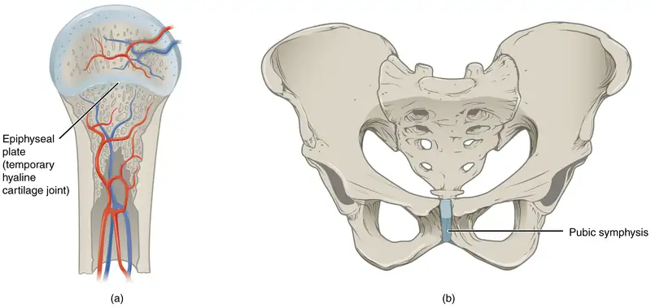
Synchondrosis¶
A synchondrosis (“joined by cartilage”) is a cartilaginous joint where bones are joined together by hyaline cartilage, or where bone is united to hyaline cartilage. A synchondrosis may be temporary or permanent. A temporary synchondrosis is the epiphyseal plate (growth plate) of a growing long bone. The epiphyseal plate is the region of growing hyaline cartilage that unites the diaphysis (shaft) of the bone to the epiphysis (end of the bone). Bone lengthening involves growth of the epiphyseal plate cartilage and its replacement by bone, which adds to the diaphysis. For many years during childhood growth, the rates of cartilage growth and bone formation are equal and thus the epiphyseal plate does not change in overall thickness as the bone lengthens. During the late teens and early 20s, growth of the cartilage slows and eventually stops. The epiphyseal plate is then completely replaced by bone, and the diaphysis and epiphysis portions of the bone fuse together to form a single adult bone. This fusion of the diaphysis and epiphysis is a synostosis. Once this occurs, bone lengthening ceases. For this reason, the epiphyseal plate is considered to be a temporary synchondrosis. Because cartilage is softer than bone tissue, injury to a growing long bone can damage the epiphyseal plate cartilage, thus stopping bone growth and preventing additional bone lengthening.
Growing layers of cartilage also form synchondroses that join together the ilium, ischium, and pubic portions of the hip bone during childhood and adolescence. When body growth stops, the cartilage disappears and is replaced by bone, forming synostoses and fusing the bony components together into the single hip bone of the adult. Similarly, synostoses unite the sacral vertebrae that fuse together to form the adult sacrum.
Interactive
Visit this website to view a radiograph (X-ray image) of a child’s hand and wrist. The growing bones of child have an epiphyseal plate that forms a synchondrosis between the shaft and end of a long bone. Being less dense than bone, the area of epiphyseal cartilage is seen on this radiograph as the dark epiphyseal gaps located near the ends of the long bones, including the radius, ulna, metacarpal, and phalanx bones. Which of the bones in this image do not show an epiphyseal plate (epiphyseal gap)?
Examples of permanent synchondroses are found in the thoracic cage. Costochondral joints, i.e., the joint between the anterior end of a rib and the costal cartilage, are synchondroses. Unlike the temporary synchondroses of the epiphyseal plate, these permanent synchondroses retain their hyaline cartilage and thus do not ossify with age. Due to the lack of movement between the bone and cartilage, both temporary and permanent synchondroses are functionally classified as a synarthrosis. Sternochondral joints are between the sternum and costal cartilage. The first sternochondral joint where the first rib is anchored to the manubrium by its costal cartilage is synchondrosis, but the remaining second through seventh sternochondral joints are synovial joints.
Symphysis¶
A cartilaginous joint where the bones are joined by fibrocartilage is called a symphysis (“growing together”). Fibrocartilage is very strong because it contains numerous bundles of thick collagen fibers, thus giving it a much greater ability to resist pulling and bending forces when compared with hyaline cartilage. This gives symphyses the ability to strongly unite the adjacent bones, but can still allow for limited movement to occur. Thus, a symphysis is functionally classified as an amphiarthrosis.
The gap separating the bones at a symphysis may be narrow or wide. An example in which the gap between the bones is narrow includes the pubic symphysis. At the pubic symphysis the pubic portions of the right and left hip bones of the pelvis are joined together by fibrocartilage across a narrow gap.
The intervertebral symphysis is a wide symphysis located between the bodies of adjacent vertebrae of the vertebral column. Here a thick pad of fibrocartilage called an intervertebral disc strongly unites the adjacent vertebrae by filling the gap between them. The width of the intervertebral symphysis is important because it allows for small movements between the adjacent vertebrae. In addition, the thick intervertebral disc provides cushioning between the vertebrae, which is important when carrying heavy objects or during high-impact activities such as running or jumping.
9.4 Synovial Joints¶
Learning Objectives
By the end of this section, you will be able to:
- Describe the structural features of a synovial joint
- Discuss the function of additional structures associated with synovial joints
- List the six types of synovial joints and give an example of each
Synovial joints are the most common type of joint in the body (Figure 9.8). A key structural characteristic for a synovial joint that is not seen at fibrous or cartilaginous joints is the presence of a joint cavity. This fluid-filled space is the site at which the articulating surfaces of the bones contact each other. Also unlike fibrous or cartilaginous joints, the articulating bone surfaces at a synovial joint are not directly connected to each other with fibrous connective tissue or cartilage. This gives the bones of a synovial joint the ability to move smoothly against each other, allowing for increased joint mobility.
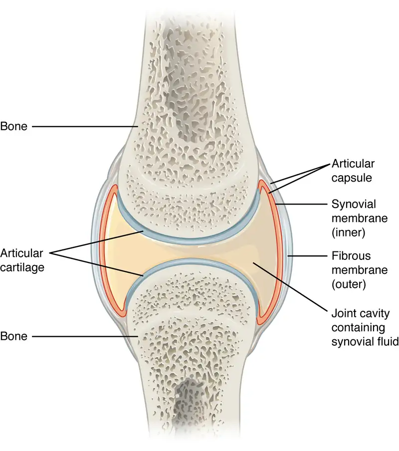
Structural Features of Synovial Joints¶
Synovial joints are characterized by the presence of a joint cavity. The walls of this space are formed by the articular capsule, a fibrous connective tissue structure that is attached to each bone just outside the area of the bone’s articulating surface. The bones of the joint articulate with each other within the joint cavity.
Friction between the bones at a synovial joint is prevented by the presence of the articular cartilage, a thin layer of hyaline cartilage that covers the entire articulating surface of each bone. However, unlike at a cartilaginous joint, the articular cartilages of each bone are not continuous with each other. Instead, the articular cartilage acts like a Teflon® coating over the bone surface, allowing the articulating bones to move smoothly against each other without damaging the underlying bone tissue. Lining the inner surface of the articular capsule is a thin synovial membrane. The cells of this membrane secrete synovial fluid (synovia = “a thick fluid”), a thick, slimy fluid that provides lubrication to further reduce friction between the bones of the joint. This fluid also provides nourishment to the articular cartilage, which does not contain blood vessels. The ability of the bones to move smoothly against each other within the joint cavity, and the freedom of joint movement this provides, means that each synovial joint is functionally classified as a diarthrosis.
Outside of their articulating surfaces, the bones are connected together by ligaments, which are strong bands of fibrous connective tissue. These strengthen and support the joint by anchoring the bones together and preventing their separation. Ligaments allow for normal movements at a joint, but limit the range of these motions, thus preventing excessive or abnormal joint movements. Ligaments are classified based on their relationship to the fibrous articular capsule. An extrinsic ligament is located outside of the articular capsule, an intrinsic ligament is fused to or incorporated into the wall of the articular capsule, and an intracapsular ligament is located inside of the articular capsule.
At many synovial joints, additional support is provided by the muscles and their tendons that act across the joint. A tendon is the dense connective tissue structure that attaches a muscle to bone. As forces acting on a joint increase, the body will automatically increase the overall strength of contraction of the muscles crossing that joint, thus allowing the muscle and its tendon to serve as a “dynamic ligament” to resist forces and support the joint. This type of indirect support by muscles is very important at the shoulder joint, for example, where the ligaments are relatively weak.
Additional Structures Associated with Synovial Joints¶
A few synovial joints of the body have a fibrocartilage structure located between the articulating bones. This is called an articular disc, which is generally small and oval-shaped, or a meniscus, which is larger and C-shaped. These structures can serve several functions, depending on the specific joint. In some places, an articular disc may act to strongly unite the bones of the joint to each other. Examples of this include the articular discs found at the sternoclavicular joint or between the distal ends of the radius and ulna bones. At other synovial joints, the disc can provide shock absorption and cushioning between the bones, which is the function of each meniscus within the knee joint. Finally, an articular disc can serve to smooth the movements between the articulating bones, as seen at the temporomandibular joint. Some synovial joints also have a fat pad, which can serve as a cushion between the bones.
Additional structures located outside of a synovial joint serve to prevent friction between the bones of the joint and the overlying muscle tendons or skin. A bursa (plural = bursae) is a thin connective tissue sac filled with lubricating liquid. They are located in regions where skin, ligaments, muscles, or muscle tendons can rub against each other, usually near a body joint (Figure 9.9). Bursae reduce friction by separating the adjacent structures, preventing them from rubbing directly against each other. Bursae are classified by their location. A subcutaneous bursa is located between the skin and an underlying bone. It allows skin to move smoothly over the bone. Examples include the prepatellar bursa located over the kneecap and the olecranon bursa at the tip of the elbow. A submuscular bursa is found between a muscle and an underlying bone, or between adjacent muscles. These prevent rubbing of the muscle during movements. A large submuscular bursa, the trochanteric bursa, is found at the lateral hip, between the greater trochanter of the femur and the overlying gluteus maximus muscle. A subtendinous bursa is found between a tendon and a bone. Examples include the subacromial bursa that protects the tendon of shoulder muscle as it passes under the acromion of the scapula, and the suprapatellar bursa that separates the tendon of the large anterior thigh muscle from the distal femur just above the knee.
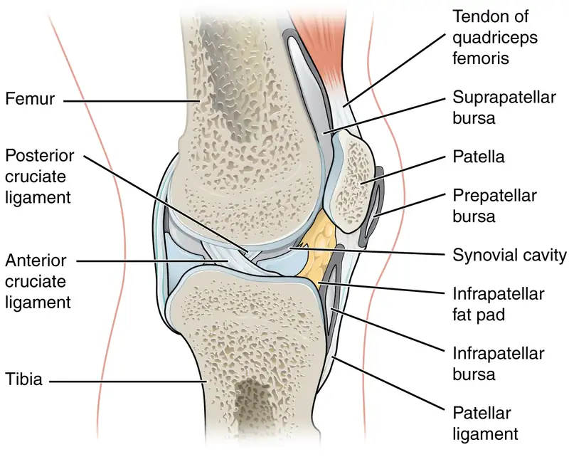
A tendon sheath is similar in structure to a bursa, but smaller. It is a connective tissue sac that surrounds a muscle tendon at places where the tendon crosses a joint. It contains a lubricating fluid that allows for smooth motions of the tendon during muscle contraction and joint movements.
Homeostatic Imbalances: Bursitis
Bursitis is the inflammation of a bursa near a joint. This will cause pain, swelling, or tenderness of the bursa and surrounding area, and may also result in joint stiffness. Bursitis is most commonly associated with the bursae found at or near the shoulder, hip, knee, or elbow joints. At the shoulder, subacromial bursitis may occur in the bursa that separates the acromion of the scapula from the tendon of a shoulder muscle as it passes deep to the acromion. In the hip region, trochanteric bursitis can occur in the bursa that overlies the greater trochanter of the femur, just below the lateral side of the hip. Ischial bursitis occurs in the bursa that separates the skin from the ischial tuberosity of the pelvis, the bony structure that is weight bearing when sitting. At the knee, inflammation and swelling of the bursa located between the skin and patella bone is prepatellar bursitis (“housemaid’s knee”), a condition more commonly seen today in roofers or floor and carpet installers who do not use knee pads. At the elbow, olecranon bursitis is inflammation of the bursa between the skin and olecranon process of the ulna. The olecranon forms the bony tip of the elbow, and bursitis here is also known as “student’s elbow.”
Bursitis can be either acute (lasting only a few days) or chronic. It can arise from muscle overuse, trauma, excessive or prolonged pressure on the skin, rheumatoid arthritis, gout, or infection of the joint. Repeated acute episodes of bursitis can result in a chronic condition. Treatments for the disorder include antibiotics if the bursitis is caused by an infection, or anti-inflammatory agents, such as nonsteroidal anti-inflammatory drugs (NSAIDs) or corticosteroids if the bursitis is due to trauma or overuse. Chronic bursitis may require that fluid be drained, but additional surgery is usually not required.
Types of Synovial Joints¶
Synovial joints are subdivided based on the shapes of the articulating surfaces of the bones that form each joint. The six types of synovial joints are pivot, hinge, condyloid, saddle, plane, and ball-and socket-joints (Figure 9.10).
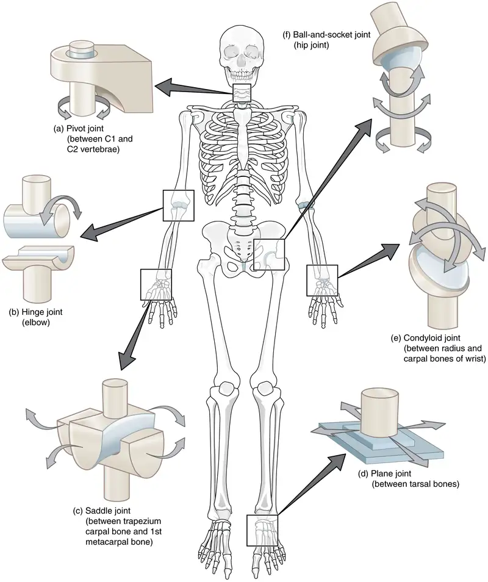
Pivot Joint¶
At a pivot joint, a rounded portion of a bone is enclosed within a ring formed partially by the articulation with another bone and partially by a ligament (see Figure 9.10a). The bone rotates within this ring. Since the rotation is around a single axis, pivot joints are functionally classified as a uniaxial diarthrosis type of joint. An example of a pivot joint is the atlantoaxial joint, found between the C1 (atlas) and C2 (axis) vertebrae. Here, the upward projecting dens of the axis articulates with the inner aspect of the atlas, where it is held in place by a ligament. Rotation at this joint allows you to turn your head from side to side. A second pivot joint is found at the proximal radioulnar joint. Here, the head of the radius is largely encircled by a ligament that holds it in place as it articulates with the radial notch of the ulna. Rotation of the radius allows for forearm movements.
Hinge Joint¶
In a hinge joint, the convex end of one bone articulates with the concave end of the adjoining bone (see Figure 9.10b). This type of joint allows only for bending and straightening motions along a single axis, and thus hinge joints are functionally classified as uniaxial joints. A good example is the elbow joint, with the articulation between the trochlea of the humerus and the trochlear notch of the ulna. Other hinge joints of the body include the knee, ankle, and interphalangeal joints between the phalanx bones of the fingers and toes.
Condyloid Joint¶
At a condyloid joint (ellipsoid joint), the shallow depression at the end of one bone articulates with a rounded structure from an adjacent bone or bones (see Figure 9.10e). The knuckle (metacarpophalangeal) joints of the hand between the distal end of a metacarpal bone and the proximal phalanx bone are condyloid joints. Another example is the radiocarpal joint of the wrist, between the shallow depression at the distal end of the radius bone and the rounded scaphoid, lunate, and triquetrum carpal bones. In this case, the articulation area has a more oval (elliptical) shape. Functionally, condyloid joints are biaxial joints that allow for two planes of movement. One movement involves the bending and straightening of the fingers or the anterior-posterior movements of the hand. The second movement is a side-to-side movement, which allows you to spread your fingers apart and bring them together, or to move your hand in a medial-going or lateral-going direction.
Saddle Joint¶
At a saddle joint, both of the articulating surfaces for the bones have a saddle shape, which is concave in one direction and convex in the other (see Figure 9.10c). This allows the two bones to fit together like a rider sitting on a saddle. Saddle joints are functionally classified as biaxial joints. The primary example is the first carpometacarpal joint, between the trapezium (a carpal bone) and the first metacarpal bone at the base of the thumb. This joint provides the thumb the ability to move away from the palm of the hand along two planes. Thus, the thumb can move within the same plane as the palm of the hand, or it can jut out anteriorly, perpendicular to the palm. This movement of the first carpometacarpal joint is what gives humans their distinctive “opposable” thumbs. The sternoclavicular joint is also classified as a saddle joint.
Plane Joint¶
At a plane joint (gliding joint), the articulating surfaces of the bones are flat or slightly curved and of approximately the same size, which allows the bones to slide against each other (see Figure 9.10d). The motion at this type of joint is usually small and tightly constrained by surrounding ligaments. Based only on their shape, plane joints can allow multiple movements, including rotation. Thus plane joints can be functionally classified as a multiaxial joint. However, not all of these movements are available to every plane joint due to limitations placed on it by ligaments or neighboring bones. Thus, depending upon the specific joint of the body, a plane joint may exhibit only a single type of movement or several movements. Plane joints are found between the carpal bones (intercarpal joints) of the wrist or tarsal bones (intertarsal joints) of the foot, between the clavicle and acromion of the scapula (acromioclavicular joint), and between the superior and inferior articular processes of adjacent vertebrae (zygapophysial joints).
Ball-and-Socket Joint¶
The joint with the greatest range of motion is the ball-and-socket joint. At these joints, the rounded head of one bone (the ball) fits into the concave articulation (the socket) of the adjacent bone (see Figure 9.10f). The hip joint and the glenohumeral (shoulder) joint are the only ball-and-socket joints of the body. At the hip joint, the head of the femur articulates with the acetabulum of the hip bone, and at the shoulder joint, the head of the humerus articulates with the glenoid cavity of the scapula.
Ball-and-socket joints are classified functionally as multiaxial joints. The femur and the humerus are able to move in both anterior-posterior and medial-lateral directions and they can also rotate around their long axis. The shallow socket formed by the glenoid cavity allows the shoulder joint an extensive range of motion. In contrast, the deep socket of the acetabulum and the strong supporting ligaments of the hip joint serve to constrain movements of the femur, reflecting the need for stability and weight-bearing ability at the hip.
Interactive
Watch this video to see an animation of synovial joints in action. Synovial joints are places where bones articulate with each other inside of a joint cavity. The different types of synovial joints are the ball-and-socket joint (shoulder joint), hinge joint (knee), pivot joint (atlantoaxial joint, between C1 and C2 vertebrae of the neck), condyloid joint (radiocarpal joint of the wrist), saddle joint (first carpometacarpal joint, between the trapezium carpal bone and the first metacarpal bone, at the base of the thumb), and plane joint (facet joints of vertebral column, between superior and inferior articular processes). Which type of synovial joint allows for the widest range of motion?
Aging and the Joints
Arthritis is a common disorder of synovial joints that involves inflammation of the joint. This often results in significant joint pain, along with swelling, stiffness, and reduced joint mobility. There are more than 100 different forms of arthritis. Arthritis may arise from aging, damage to the articular cartilage, autoimmune diseases, bacterial or viral infections, or unknown (probably genetic) causes.
The most common type of arthritis is osteoarthritis, which is associated with aging and “wear and tear” of the articular cartilage (Figure 9.11). Risk factors that may lead to osteoarthritis later in life include injury to a joint; jobs that involve physical labor; sports with running, twisting, or throwing actions; and being overweight. These factors put stress on the articular cartilage that covers the surfaces of bones at synovial joints, causing the cartilage to gradually become thinner. As the articular cartilage layer wears down, more pressure is placed on the bones. The joint responds by increasing production of the lubricating synovial fluid, but this can lead to swelling of the joint cavity, causing pain and joint stiffness as the articular capsule is stretched. The bone tissue underlying the damaged articular cartilage also responds by thickening, producing irregularities and causing the articulating surface of the bone to become rough or bumpy. Joint movement then results in pain and inflammation. In its early stages, symptoms of osteoarthritis may be reduced by mild activity that “warms up” the joint, but the symptoms may worsen following exercise. In individuals with more advanced osteoarthritis, the affected joints can become more painful and therefore are difficult to use effectively, resulting in increased immobility. There is no cure for osteoarthritis, but several treatments can help alleviate the pain. Treatments may include lifestyle changes, such as weight loss and low-impact exercise, and over-the-counter or prescription medications that help to alleviate the pain and inflammation. For severe cases, joint replacement surgery (arthroplasty) may be required.
Joint replacement is a very invasive procedure, so other treatments are always tried before surgery. However arthroplasty can provide relief from chronic pain and can enhance mobility within a few months following the surgery. This type of surgery involves replacing the articular surfaces of the bones with prosthesis (artificial components). For example, in hip arthroplasty, the worn or damaged parts of the hip joint, including the head and neck of the femur and the acetabulum of the pelvis, are removed and replaced with artificial joint components. The replacement head for the femur consists of a rounded ball attached to the end of a shaft that is inserted inside the diaphysis of the femur. The acetabulum of the pelvis is reshaped and a replacement socket is fitted into its place. The parts, which are always built in advance of the surgery, are sometimes custom made to produce the best possible fit for a patient.
Gout is a form of arthritis that results from the deposition of uric acid crystals within a body joint. Usually only one or a few joints are affected, such as the big toe, knee, or ankle. The attack may only last a few days, but may return to the same or another joint. Gout occurs when the body makes too much uric acid or the kidneys do not properly excrete it. A diet with excessive fructose has been implicated in raising the chances of a susceptible individual developing gout.
Other forms of arthritis are associated with various autoimmune diseases, bacterial infections of the joint, or unknown genetic causes. Autoimmune diseases, including rheumatoid arthritis, scleroderma, or systemic lupus erythematosus, produce arthritis because the immune system of the body attacks the body joints. In rheumatoid arthritis, the joint capsule and synovial membrane become inflamed. As the disease progresses, the articular cartilage is severely damaged or destroyed, resulting in joint deformation, loss of movement, and severe disability. The most commonly involved joints are the hands, feet, and cervical spine, with corresponding joints on both sides of the body usually affected, though not always to the same extent. Rheumatoid arthritis is also associated with lung fibrosis, vasculitis (inflammation of blood vessels), coronary heart disease, and premature mortality. With no known cure, treatments are aimed at alleviating symptoms. Exercise, anti-inflammatory and pain medications, various specific disease-modifying anti-rheumatic drugs, or surgery are used to treat rheumatoid arthritis.
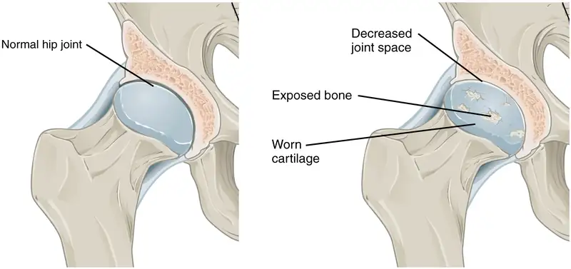
Interactive
Visit this website to learn about a patient who arrives at the hospital with joint pain and weakness in his legs. What caused this patient’s weakness?
Interactive
Watch this animation to observe hip replacement surgery (total hip arthroplasty), which can be used to alleviate the pain and loss of joint mobility associated with osteoarthritis of the hip joint. What is the most common cause of hip disability?
Interactive
Watch this video to learn about the symptoms and treatments for rheumatoid arthritis. Which system of the body malfunctions in rheumatoid arthritis and what does this cause?
9.5 Types of Body Movements¶
Learning Objectives
By the end of this section, you will be able to:
- Define the different types of body movements
- Identify the joints that allow for these motions
Synovial joints allow the body a tremendous range of movements. Each movement at a synovial joint results from the contraction or relaxation of the muscles that are attached to the bones on either side of the articulation. The type of movement that can be produced at a synovial joint is determined by its structural type. While the ball-and-socket joint gives the greatest range of movement at an individual joint, in other regions of the body, several joints may work together to produce a particular movement. Overall, each type of synovial joint is necessary to provide the body with its great flexibility and mobility. There are many types of movement that can occur at synovial joints (Table 9.1). Movement types are generally paired, with one being the opposite of the other. Body movements are always described in relation to the anatomical position of the body: upright stance, with upper limbs to the side of body and palms facing forward. Refer to Figure 9.12 as you go through this section.
Interactive
Watch this video to learn about anatomical motions. What motions involve increasing or decreasing the angle of the foot at the ankle?
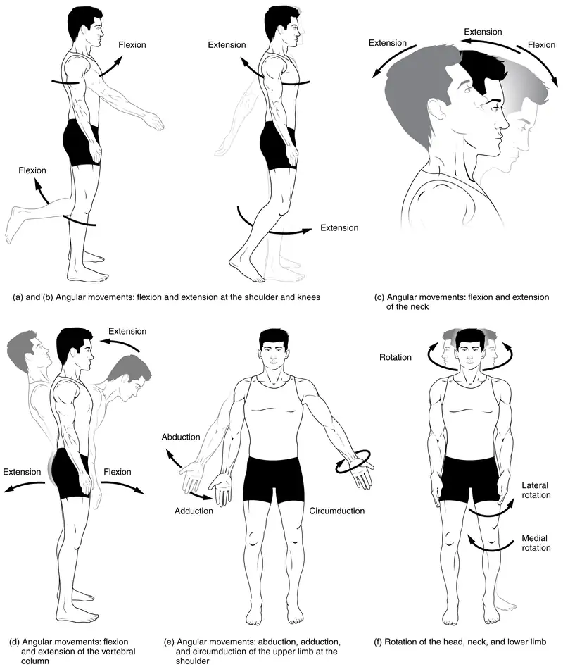
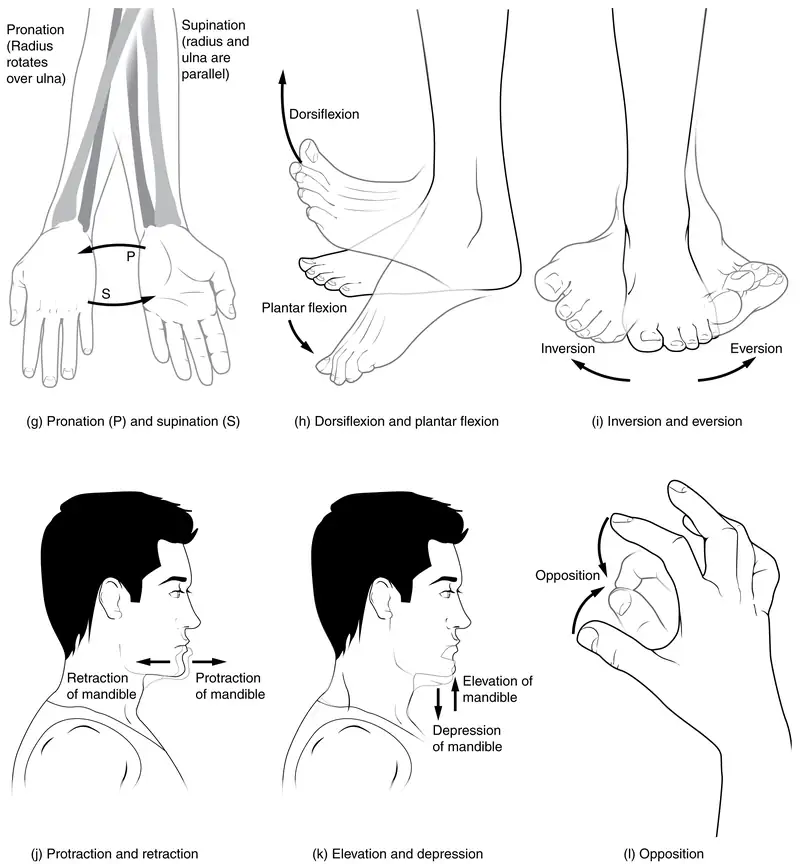
Flexion and Extension¶
Flexion and extension are typically movements that take place within the sagittal plane and involve anterior or posterior movements of the neck, trunk, or limbs. For the vertebral column, flexion (anterior flexion) is an anterior (forward) bending of the neck or trunk, while extension involves a posterior-directed motion, such as straightening from a flexed position or bending backward. Lateral flexion of the vertebral column occurs in the coronal plane and is defined as the bending of the neck or trunk toward the right or left side. These movements of the vertebral column involve both the symphysis joint formed by each intervertebral disc, as well as the plane type of synovial joint formed between the inferior articular processes of one vertebra and the superior articular processes of the next lower vertebra.
In the limbs, flexion decreases the angle between the bones (bending of the joint), while extension increases the angle and straightens the joint. For the upper limb, all anterior-going motions are flexion and all posterior-going motions are extension. These include anterior-posterior movements of the arm at the shoulder, the forearm at the elbow, the hand at the wrist, and the fingers at the metacarpophalangeal and interphalangeal joints. For the thumb, extension moves the thumb away from the palm of the hand, within the same plane as the palm, while flexion brings the thumb back against the index finger or into the palm. These motions take place at the first carpometacarpal joint. In the lower limb, bringing the thigh forward and upward is flexion at the hip joint, while any posterior-going motion of the thigh is extension. Note that extension of the thigh beyond the anatomical (standing) position is greatly limited by the ligaments that support the hip joint. Knee flexion is the bending of the knee to bring the foot toward the posterior thigh, and extension is the straightening of the knee. Flexion and extension movements are seen at the hinge, condyloid, saddle, and ball-and-socket joints of the limbs (see Figure 9.12a-d).
Hyperextension is the abnormal or excessive extension of a joint beyond its normal range of motion, thus resulting in injury. Similarly, hyperflexion is excessive flexion at a joint. Hyperextension injuries are common at hinge joints such as the knee or elbow. In cases of “whiplash” in which the head is suddenly moved backward and then forward, a patient may experience both hyperextension and hyperflexion of the cervical region.
Abduction and Adduction¶
Abduction and adduction motions occur within the coronal plane and involve medial-lateral motions of the limbs, fingers, toes, or thumb. Abduction moves the limb laterally away from the midline of the body, while adduction is the opposing movement that brings the limb toward the body or across the midline. For example, abduction is raising the arm at the shoulder joint, moving it laterally away from the body, while adduction brings the arm down to the side of the body. Similarly, abduction and adduction at the wrist moves the hand away from or toward the midline of the body. Spreading the fingers or toes apart is also abduction, while bringing the fingers or toes together is adduction. For the thumb, abduction is the anterior movement that brings the thumb to a 90° perpendicular position, pointing straight out from the palm. Adduction moves the thumb back to the anatomical position, next to the index finger. Abduction and adduction movements are seen at condyloid, saddle, and ball-and-socket joints (see Figure 9.12e).
Circumduction¶
Circumduction is the movement of a body region in a circular manner, in which one end of the body region being moved stays relatively stationary while the other end describes a circle. It involves the sequential combination of flexion, abduction, extension, and adduction at a joint. This type of motion is found at biaxial condyloid and saddle joints, and at multiaxial ball-and-sockets joints (see Figure 9.12e).
Rotation¶
Rotation can occur within the vertebral column, at a pivot joint, or at a ball-and-socket joint. Rotation of the neck or body is the twisting movement produced by the summation of the small rotational movements available between adjacent vertebrae. At a pivot joint, one bone rotates in relation to another bone. This is a uniaxial joint, and thus rotation is the only motion allowed at a pivot joint. For example, at the atlantoaxial joint, the first cervical (C1) vertebra (atlas) rotates around the dens, the upward projection from the second cervical (C2) vertebra (axis). This allows the head to rotate from side to side as when shaking the head “no.” The proximal radioulnar joint is a pivot joint formed by the head of the radius and its articulation with the ulna. This joint allows for the radius to rotate along its length during pronation and supination movements of the forearm.
Rotation can also occur at the ball-and-socket joints of the shoulder and hip. Here, the humerus and femur rotate around their long axis, which moves the anterior surface of the arm or thigh either toward or away from the midline of the body. Movement that brings the anterior surface of the limb toward the midline of the body is called medial (internal) rotation. Conversely, rotation of the limb so that the anterior surface moves away from the midline is lateral (external) rotation (see Figure 9.12f). Be sure to distinguish medial and lateral rotation, which can only occur at the multiaxial shoulder and hip joints, from circumduction, which can occur at either biaxial or multiaxial joints.
Supination and Pronation¶
Supination and pronation are movements of the forearm. In the anatomical position, the upper limb is held next to the body with the palm facing forward. This is the supinated position of the forearm. In this position, the radius and ulna are parallel to each other. When the palm of the hand faces backward, the forearm is in the pronated position, and the radius and ulna form an X-shape.
Supination and pronation are the movements of the forearm that go between these two positions. Pronation is the motion that moves the forearm from the supinated (anatomical) position to the pronated (palm backward) position. This motion is produced by rotation of the radius at the proximal radioulnar joint, accompanied by movement of the radius at the distal radioulnar joint. The proximal radioulnar joint is a pivot joint that allows for rotation of the head of the radius. Because of the slight curvature of the shaft of the radius, this rotation causes the distal end of the radius to cross over the distal ulna at the distal radioulnar joint. This crossing over brings the radius and ulna into an X-shape position. Supination is the opposite motion, in which rotation of the radius returns the bones to their parallel positions and moves the palm to the anterior facing (supinated) position. It helps to remember that supination is the motion you use when scooping up soup with a spoon (see Figure 9.13g).
Dorsiflexion and Plantar Flexion¶
Dorsiflexion and plantar flexion are movements at the ankle joint, which is a hinge joint. Lifting the front of the foot, so that the top of the foot moves toward the anterior leg is dorsiflexion, while lifting the heel of the foot from the ground or pointing the toes downward is plantar flexion. These are the only movements available at the ankle joint (see Figure 9.13h).
Inversion and Eversion¶
Inversion and eversion are complex movements that involve the multiple plane joints among the tarsal bones of the posterior foot (intertarsal joints) and thus are not motions that take place at the ankle joint. Inversion is the turning of the foot to angle the bottom of the foot toward the midline, while eversion turns the bottom of the foot away from the midline. The foot has a greater range of inversion than eversion motion. These are important motions that help to stabilize the foot when walking or running on an uneven surface and aid in the quick side-to-side changes in direction used during active sports such as basketball, racquetball, or soccer (see Figure 9.13i).
Protraction and Retraction¶
Protraction and retraction are anterior-posterior movements of the scapula or mandible. Protraction of the scapula occurs when the shoulder is moved forward, as when pushing against something or throwing a ball. Retraction is the opposite motion, with the scapula being pulled posteriorly and medially, toward the vertebral column. For the mandible, protraction occurs when the lower jaw is pushed forward, to stick out the chin, while retraction pulls the lower jaw backward. (See Figure 9.13j.)
Depression and Elevation¶
Depression and elevation are downward and upward movements of the scapula or mandible. The upward movement of the scapula and shoulder is elevation, while a downward movement is depression. These movements are used to shrug your shoulders. Similarly, elevation of the mandible is the upward movement of the lower jaw used to close the mouth or bite on something, and depression is the downward movement that produces opening of the mouth (see Figure 9.13k).
Excursion¶
Excursion is the side to side movement of the mandible. Lateral excursion moves the mandible away from the midline, toward either the right or left side. Medial excursion returns the mandible to its resting position at the midline.
Superior Rotation and Inferior Rotation¶
Superior and inferior rotation are movements of the scapula and are defined by the direction of movement of the glenoid cavity. These motions involve rotation of the scapula around a point inferior to the scapular spine and are produced by combinations of muscles acting on the scapula. During superior rotation, the glenoid cavity moves upward as the medial end of the scapular spine moves downward. This is a very important motion that contributes to upper limb abduction. Without superior rotation of the scapula, the greater tubercle of the humerus would hit the acromion of the scapula, thus preventing any abduction of the arm above shoulder height. Superior rotation of the scapula is thus required for full abduction of the upper limb. Superior rotation is also used without arm abduction when carrying a heavy load with your hand or on your shoulder. You can feel this rotation when you pick up a load, such as a heavy book bag and carry it on only one shoulder. To increase its weight-bearing support for the bag, the shoulder lifts as the scapula superiorly rotates. Inferior rotation occurs during limb adduction and involves the downward motion of the glenoid cavity with upward movement of the medial end of the scapular spine.
Opposition and Reposition¶
Opposition is the thumb movement that brings the tip of the thumb in contact with the tip of a finger. This movement is produced at the first carpometacarpal joint, which is a saddle joint formed between the trapezium carpal bone and the first metacarpal bone. Thumb opposition is produced by a combination of flexion and abduction of the thumb at this joint. Returning the thumb to its anatomical position next to the index finger is called reposition (see Figure 9.13l).
Table 9.1
| Movements of the Joints | ||
|---|---|---|
| Type of Joint | Movement | Example |
| Pivot | Uniaxial joint; allows rotational movement | Atlantoaxial joint (C1–C2 vertebrae articulation); proximal radioulnar joint |
| Hinge | Uniaxial joint; allows flexion/extension movements | Elbow; ankle; interphalangeal joints of fingers and toes |
| Condyloid | Biaxial joint; allows flexion/extension, abduction/adduction, and circumduction movements | Metacarpophalangeal (knuckle) joints of fingers; radiocarpal joint of wrist; metatarsophalangeal joints for toes |
| Saddle | Biaxial joint; allows flexion/extension, abduction/adduction, and circumduction movements | First carpometacarpal joint of the thumb; sternoclavicular joint |
| Plane | Multiaxial joint; allows inversion and eversion of foot, or flexion, extension, and lateral flexion of the vertebral column | Intertarsal joints of foot; superior-inferior articular process articulations between vertebrae |
| Ball-and-socket | Multiaxial joint; allows flexion/extension, abduction/adduction, circumduction, and medial/lateral rotation movements | Shoulder and hip joints |
9.6 Anatomy of Selected Synovial Joints¶
Learning Objectives
By the end of this section, you will be able to:
- Describe the bones that articulate together to form selected synovial joints
- Discuss the movements available at each joint
- Describe the structures that support and prevent excess movements at each joint
Each synovial joint of the body is specialized to perform certain movements. The movements that are allowed are determined by the structural classification for each joint. For example, a multiaxial ball-and-socket joint has much more mobility than a uniaxial hinge joint. However, the ligaments and muscles that support a joint may place restrictions on the total range of motion available. Thus, the ball-and-socket joint of the shoulder has little in the way of ligament support, which gives the shoulder a very large range of motion. In contrast, movements at the hip joint are restricted by strong ligaments, which reduce its range of motion but confer stability during standing and weight bearing.
This section will examine the anatomy of selected synovial joints of the body. Anatomical names for most joints are derived from the names of the bones that articulate at that joint, although some joints, such as the elbow, hip, and knee joints are exceptions to this general naming scheme.
Articulations of the Vertebral Column¶
In addition to being held together by the intervertebral discs, adjacent vertebrae also articulate with each other at synovial joints formed between the superior and inferior articular processes called zygapophysial joints (facet joints) (see Figure 9.3). These are plane joints that provide for only limited motions between the vertebrae. The orientation of the articular processes at these joints varies in different regions of the vertebral column and serves to determine the types of motions available in each vertebral region. The cervical and lumbar regions have the greatest ranges of motions.
In the neck, the articular processes of cervical vertebrae are flattened and generally face upward or downward. This orientation provides the cervical vertebral column with extensive ranges of motion for flexion, extension, lateral flexion, and rotation. In the thoracic region, the downward projecting and overlapping spinous processes, along with the attached thoracic cage, greatly limit flexion, extension, and lateral flexion. The lumbar region allows for considerable extension, flexion, and lateral flexion, but the orientation of the articular processes largely prohibits rotation.
The articulations formed between the skull, the atlas (C1 vertebra), and the axis (C2 vertebra) differ from the articulations in other vertebral areas and play important roles in movement of the head. The atlanto-occipital joint is formed by the articulations between the superior articular processes of the atlas and the occipital condyles on the base of the skull. This articulation has a pronounced U-shaped curvature, oriented along the anterior-posterior axis. This allows the skull to rock forward and backward, producing flexion and extension of the head. This moves the head up and down, as when shaking your head “yes.”
The atlantoaxial joint, between the atlas and axis, consists of three articulations. The paired superior articular processes of the axis articulate with the inferior articular processes of the atlas. These articulating surfaces are relatively flat and oriented horizontally. The third articulation is the pivot joint formed between the dens, which projects upward from the body of the axis, and the inner aspect of the anterior arch of the atlas (Figure 9.14). A strong ligament passes posterior to the dens to hold it in position against the anterior arch. These articulations allow the atlas to rotate on top of the axis, moving the head toward the right or left, as when shaking your head “no.”
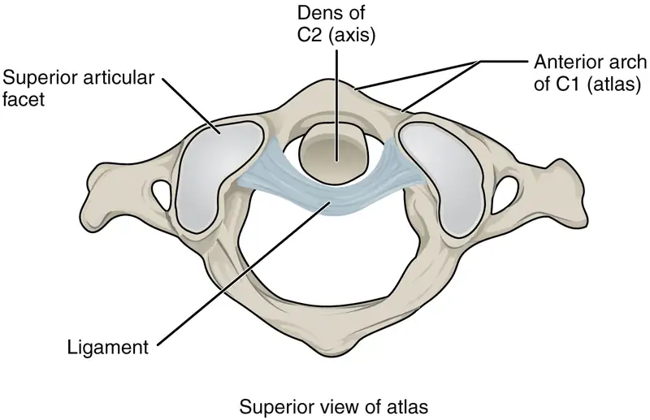
Temporomandibular Joint¶
The temporomandibular joint (TMJ) is the joint that allows for opening (mandibular depression) and closing (mandibular elevation) of the mouth, as well as side-to-side and protraction/retraction motions of the lower jaw. This joint involves the articulation between the mandibular fossa and articular tubercle of the temporal bone, with the condyle (head) of the mandible. Located between these bony structures, filling the gap between the skull and mandible, is a flexible articular disc (Figure 9.15). This disc serves to smooth the movements between the temporal bone and mandibular condyle.
Movement at the TMJ during opening and closing of the mouth involves both gliding and hinge motions of the mandible. With the mouth closed, the mandibular condyle and articular disc are located within the mandibular fossa of the temporal bone. During opening of the mouth, the mandible hinges downward and at the same time is pulled anteriorly, causing both the condyle and the articular disc to glide forward from the mandibular fossa onto the downward projecting articular tubercle. The net result is a forward and downward motion of the condyle and mandibular depression. The temporomandibular joint is supported by an extrinsic ligament that anchors the mandible to the skull. This ligament spans the distance between the base of the skull and the lingula on the medial side of the mandibular ramus.
Dislocation of the TMJ may occur when opening the mouth too wide (such as when taking a large bite) or following a blow to the jaw, resulting in the mandibular condyle moving beyond (anterior to) the articular tubercle. In this case, the individual would not be able to close their mouth. Temporomandibular joint disorder is a painful condition that may arise due to arthritis, wearing of the articular cartilage covering the bony surfaces of the joint, muscle fatigue from overuse or grinding of the teeth, damage to the articular disc within the joint, or jaw injury. Temporomandibular joint disorders can also cause headache, difficulty chewing, or even the inability to move the jaw (lock jaw). Pharmacologic agents for pain or other therapies, including bite guards, are used as treatments.
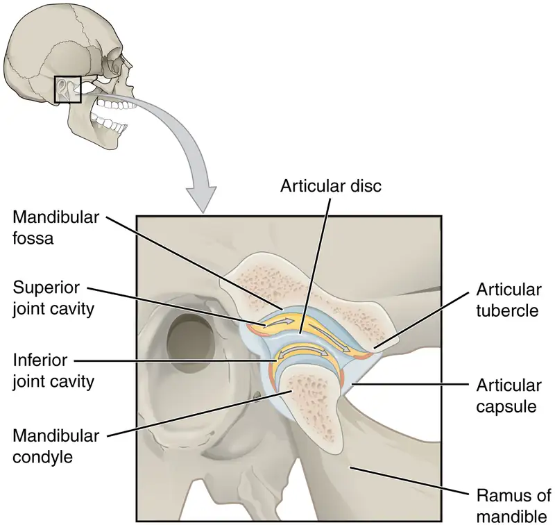
Interactive
Watch this video to learn about TMJ. Opening of the mouth requires the combination of two motions at the temporomandibular joint, an anterior gliding motion of the articular disc and mandible and the downward hinging of the mandible. What is the initial movement of the mandible during opening and how much mouth opening does this produce?
Shoulder Joint¶
The shoulder joint is called the glenohumeral joint. This is a ball-and-socket joint formed by the articulation between the head of the humerus and the glenoid cavity of the scapula (Figure 9.16). This joint has the largest range of motion of any joint in the body. However, this freedom of movement is due to the lack of structural support and thus the enhanced mobility is offset by a loss of stability.
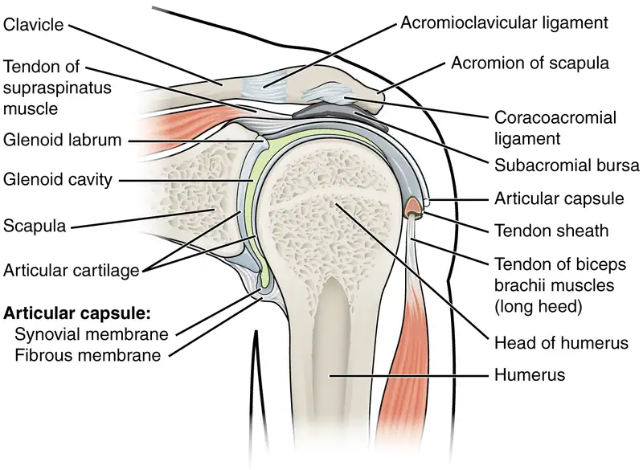
The large range of motions at the shoulder joint is provided by the articulation of the large, rounded humeral head with the small and shallow glenoid cavity, which is only about one third of the size of the humeral head. The socket formed by the glenoid cavity is deepened slightly by a small lip of fibrocartilage called the glenoid labrum, which extends around the outer margin of the cavity. The articular capsule that surrounds the glenohumeral joint is relatively thin and loose to allow for large motions of the upper limb. Some structural support for the joint is provided by thickenings of the articular capsule wall that form weak intrinsic ligaments. These include the coracohumeral ligament, running from the coracoid process of the scapula to the anterior humerus, and three ligaments, each called a glenohumeral ligament, located on the anterior side of the articular capsule. These ligaments help to strengthen the superior and anterior capsule walls.
However, the primary support for the shoulder joint is provided by muscles crossing the joint, particularly the four rotator cuff muscles. These muscles (supraspinatus, infraspinatus, teres minor, and subscapularis) arise from the scapula and attach to the greater or lesser tubercles of the humerus. As these muscles cross the shoulder joint, their tendons encircle the head of the humerus and become fused to the anterior, superior, and posterior walls of the articular capsule. The thickening of the capsule formed by the fusion of these four muscle tendons is called the rotator cuff. Two bursae, the subacromial bursa and the subscapular bursa, help to prevent friction between the rotator cuff muscle tendons and the scapula as these tendons cross the glenohumeral joint. In addition to their individual actions of moving the upper limb, the rotator cuff muscles also serve to hold the head of the humerus in position within the glenoid cavity. By constantly adjusting their strength of contraction to resist forces acting on the shoulder, these muscles serve as “dynamic ligaments” and thus provide the primary structural support for the glenohumeral joint.
Injuries to the shoulder joint are common. Repetitive use of the upper limb, particularly in abduction such as during throwing, swimming, or racquet sports, may lead to acute or chronic inflammation of the bursae or muscle tendons, a tear of the glenoid labrum, or degeneration or tears of the rotator cuff. Because the humeral head is strongly supported by muscles and ligaments around its anterior, superior, and posterior aspects, most dislocations of the humerus occur in an inferior direction. This can occur when force is applied to the humerus when the upper limb is fully abducted, as when diving to catch a baseball and landing on your hand or elbow. Inflammatory responses to any shoulder injury can lead to the formation of scar tissue between the articular capsule and surrounding structures, thus reducing shoulder mobility, a condition called adhesive capsulitis (“frozen shoulder”).
Interactive
Watch this video for a tutorial on the anatomy of the shoulder joint. What movements are available at the shoulder joint?
Interactive
Watch this video to learn more about the anatomy of the shoulder joint, including bones, joints, muscles, nerves, and blood vessels. What is the shape of the glenoid labrum in cross-section, and what is the importance of this shape?
Elbow Joint¶
The elbow joint is a uniaxial hinge joint formed by the humeroulnar joint, the articulation between the trochlea of the humerus and the trochlear notch of the ulna. Also associated with the elbow are the humeroradial joint and the proximal radioulnar joint. All three of these joints are enclosed within a single articular capsule (Figure 9.17).
The articular capsule of the elbow is thin on its anterior and posterior aspects, but is thickened along its outside margins by strong intrinsic ligaments. These ligaments prevent side-to-side movements and hyperextension. On the medial side is the triangular ulnar collateral ligament. This arises from the medial epicondyle of the humerus and attaches to the medial side of the proximal ulna. The strongest part of this ligament is the anterior portion, which resists hyperextension of the elbow. The ulnar collateral ligament may be injured by frequent, forceful extensions of the forearm, as is seen in baseball pitchers. Reconstructive surgical repair of this ligament is referred to as Tommy John surgery, named for the former major league pitcher who was the first person to have this treatment.
The lateral side of the elbow is supported by the radial collateral ligament. This arises from the lateral epicondyle of the humerus and then blends into the lateral side of the annular ligament. The annular ligament encircles the head of the radius. This ligament supports the head of the radius as it articulates with the radial notch of the ulna at the proximal radioulnar joint. This is a pivot joint that allows for rotation of the radius during supination and pronation of the forearm.
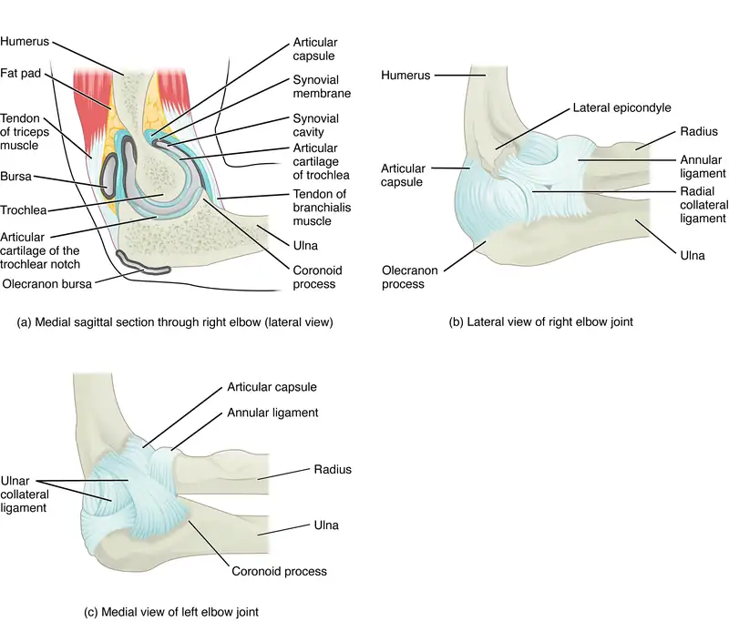
Interactive
Watch this animation to learn more about the anatomy of the elbow joint. Which structures provide the main stability for the elbow?
Interactive
Watch this video to learn more about the anatomy of the elbow joint, including bones, joints, muscles, nerves, and blood vessels. What are the functions of the articular cartilage?
Hip Joint¶
The hip joint is a multiaxial ball-and-socket joint between the head of the femur and the acetabulum of the hip bone (Figure 9.18). The hip carries the weight of the body and thus requires strength and stability during standing and walking. For these reasons, its range of motion is more limited than at the shoulder joint.
The acetabulum is the socket portion of the hip joint. This space is deep and has a large articulation area for the femoral head, thus giving stability and weight bearing ability to the joint. The acetabulum is further deepened by the acetabular labrum, a fibrocartilage lip attached to the outer margin of the acetabulum. The surrounding articular capsule is strong, with several thickened areas forming intrinsic ligaments. These ligaments arise from the hip bone, at the margins of the acetabulum, and attach to the femur at the base of the neck. The ligaments are the iliofemoral ligament, pubofemoral ligament, and ischiofemoral ligament, all of which spiral around the head and neck of the femur. The ligaments are tightened by extension at the hip, thus pulling the head of the femur tightly into the acetabulum when in the upright, standing position. Very little additional extension of the thigh is permitted beyond this vertical position. These ligaments thus stabilize the hip joint and allow you to maintain an upright standing position with only minimal muscle contraction. Inside of the articular capsule, the ligament of the head of the femur (ligamentum teres) spans between the acetabulum and femoral head. This intracapsular ligament is normally slack and does not provide any significant joint support, but it does provide a pathway for an important artery that supplies the head of the femur.
The hip is prone to osteoarthritis, and thus was the first joint for which a replacement prosthesis was developed. A common injury in elderly individuals, particularly those with weakened bones due to osteoporosis, is a “broken hip,” which is actually a fracture of the femoral neck. This may result from a fall, or it may cause the fall. This can happen as one lower limb is taking a step and all of the body weight is placed on the other limb, causing the femoral neck to break and producing a fall. Any accompanying disruption of the blood supply to the femoral neck or head can lead to necrosis of these areas, resulting in bone and cartilage death. Femoral fractures usually require surgical treatment, after which the patient will need mobility assistance for a prolonged period, either from family members or in a long-term care facility. Consequentially, the associated health care costs of “broken hips” are substantial. In addition, hip fractures are associated with increased rates of morbidity (incidences of disease) and mortality (death). Surgery for a hip fracture followed by prolonged bed rest may lead to life-threatening complications, including pneumonia, infection of pressure ulcers (bedsores), and thrombophlebitis (deep vein thrombosis; blood clot formation) that can result in a pulmonary embolism (blood clot within the lung).
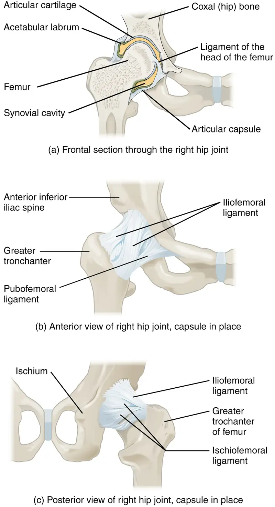
Interactive
Watch this video for a tutorial on the anatomy of the hip joint. What is a possible consequence following a fracture of the femoral neck within the capsule of the hip joint?
Interactive
Watch this video to learn more about the anatomy of the hip joint, including bones, joints, muscles, nerves, and blood vessels. Where is the articular cartilage thickest within the hip joint?
Knee Joint¶
The knee joint is the largest joint of the body (Figure 9.19). It actually consists of three articulations. The femoropatellar joint is found between the patella and the distal femur. The medial tibiofemoral joint and lateral tibiofemoral joint are located between the medial and lateral condyles of the femur and the medial and lateral condyles of the tibia. All of these articulations are enclosed within a single articular capsule. The knee functions primarily as a hinge joint, allowing flexion and extension of the leg. This action is generated by both rolling and gliding motions of the femur on the tibia. In addition, some rotation of the leg is available when the knee is flexed, but not when extended. Because of the shape of the medial femoral condyle, the knee must “screw home” to fully extend, and the tibia externally rotates to achieve proper alignment. During initial flexion from a fully extended position, the knee “unlocks” by the tibia internally rotating. The knee is well constructed for weight bearing in its extended position, but is vulnerable to injuries associated with hyperextension, twisting, or blows to the medial or lateral side of the joint, particularly while weight bearing.
At the femoropatellar joint, the patella slides vertically within a groove on the distal femur. The patella is a sesamoid bone incorporated into the tendon of the quadriceps femoris muscle, the large muscle of the anterior thigh. The patella serves to protect the quadriceps tendon from friction against the distal femur. Continuing from the patella to the anterior tibia just below the knee is the patellar ligament. Acting via the patella and patellar ligament, the quadriceps femoris is a powerful muscle that acts to extend the leg at the knee. It also serves as a “dynamic ligament” to provide very important support and stabilization for the knee joint.
The medial and lateral tibiofemoral joints are the articulations between the rounded condyles of the femur and the relatively flat condyles of the tibia. During flexion and extension motions, the condyles of the femur both roll and glide over the surfaces of the tibia. The rolling action produces flexion or extension, while the gliding action serves to maintain the femoral condyles centered over the tibial condyles, thus ensuring maximal bony, weight-bearing support for the femur in all knee positions. As the knee comes into full extension, the femur undergoes a slight medial rotation in relation to tibia. The rotation results because the lateral condyle of the femur is slightly smaller than the medial condyle. Thus, the lateral condyle finishes its rolling motion first, followed by the medial condyle. The resulting small medial rotation of the femur serves to “lock” the knee into its fully extended and most stable position. Flexion of the knee is initiated by a slight lateral rotation of the femur on the tibia, which “unlocks” the knee. This lateral rotation motion is produced by the popliteus muscle of the posterior leg.
Located between the articulating surfaces of the femur and tibia are two articular discs, the medial meniscus and lateral meniscus (see Figure 9.19b). Each is a C-shaped fibrocartilage structure that is thin along its inside margin and thick along the outer margin. They are attached to their tibial condyles, but do not attach to the femur. While both menisci are free to move during knee motions, the medial meniscus shows less movement because it is anchored at its outer margin to the articular capsule and tibial collateral ligament. The menisci provide padding between the bones and help to fill the gap between the round femoral condyles and flattened tibial condyles. Some areas of each meniscus lack an arterial blood supply and thus these areas heal poorly if damaged.
The knee joint has multiple ligaments that provide support, particularly in the extended position (see Figure 9.19c). Outside of the articular capsule, located at the sides of the knee, are two extrinsic ligaments. The fibular collateral ligament (lateral collateral ligament) is on the lateral side and spans from the lateral epicondyle of the femur to the head of the fibula. The tibial collateral ligament (medial collateral ligament) of the medial knee runs from the medial epicondyle of the femur to the medial tibia. As it crosses the knee, the tibial collateral ligament is firmly attached on its deep side to the articular capsule and to the medial meniscus, an important factor when considering knee injuries. In the fully extended knee position, both collateral ligaments are taut (tight), thus serving to stabilize and support the extended knee and preventing side-to-side or rotational motions between the femur and tibia.
The articular capsule of the posterior knee is thickened by intrinsic ligaments that help to resist knee hyperextension. Inside the knee are two intracapsular ligaments, the anterior cruciate ligament and posterior cruciate ligament. These ligaments are anchored inferiorly to the tibia at the intercondylar eminence, the roughened area between the tibial condyles. The cruciate ligaments are named for whether they are attached anteriorly or posteriorly to this tibial region. Each ligament runs diagonally upward to attach to the inner aspect of a femoral condyle. The cruciate ligaments are named for the X-shape formed as they pass each other (cruciate means “cross”). The posterior cruciate ligament is the stronger ligament. It serves to support the knee when it is flexed and weight bearing, as when walking downhill. In this position, the posterior cruciate ligament prevents the femur from sliding anteriorly off the top of the tibia. The anterior cruciate ligament becomes tight when the knee is extended, and thus resists hyperextension.
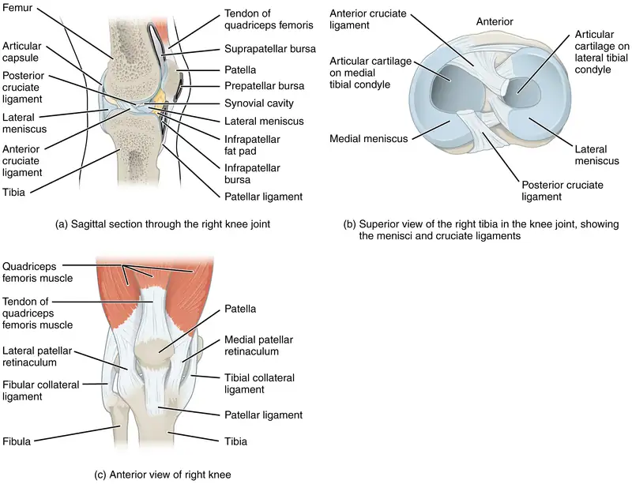
Interactive
Watch this video to learn more about the flexion and extension of the knee, as the femur both rolls and glides on the tibia to maintain stable contact between the bones in all knee positions. The patella glides along a groove on the anterior side of the distal femur. The collateral ligaments on the sides of the knee become tight in the fully extended position to help stabilize the knee. The posterior cruciate ligament supports the knee when flexed and the anterior cruciate ligament becomes tight when the knee comes into full extension to resist hyperextension. What are the ligaments that support the knee joint?
Interactive
Watch this video to learn more about the anatomy of the knee joint, including bones, joints, muscles, nerves, and blood vessels. Which ligament of the knee keeps the tibia from sliding too far forward in relation to the femur and which ligament keeps the tibia from sliding too far backward?
Disorders of the Joints
Injuries to the knee are common. Since this joint is primarily supported by muscles and ligaments, injuries to any of these structures will result in pain or knee instability. Injury to the posterior cruciate ligament occurs when the knee is flexed and the tibia is driven posteriorly, such as falling and landing on the tibial tuberosity or hitting the tibia on the dashboard when not wearing a seatbelt during an automobile accident. More commonly, injuries occur when forces are applied to the extended knee, particularly when the foot is planted and unable to move. Anterior cruciate ligament injuries can result with a forceful blow to the anterior knee, producing hyperextension, or when a runner makes a quick change of direction that produces both twisting and hyperextension of the knee.
A worse combination of injuries can occur with a hit to the lateral side of the extended knee (Figure 9.20). A moderate blow to the lateral knee will cause the medial side of the joint to open, resulting in stretching or damage to the tibial collateral ligament. Because the medial meniscus is attached to the tibial collateral ligament, a stronger blow can tear the ligament and also damage the medial meniscus. This is one reason that the medial meniscus is 20 times more likely to be injured than the lateral meniscus. A powerful blow to the lateral knee produces a “terrible triad” injury, in which there is a sequential injury to the tibial collateral ligament, medial meniscus, and anterior cruciate ligament.
Arthroscopic surgery has greatly improved the surgical treatment of knee injuries and reduced subsequent recovery times. This procedure involves a small incision and the insertion into the joint of an arthroscope, a pencil-thin instrument that allows for visualization of the joint interior. Small surgical instruments are also inserted via additional incisions. These tools allow a surgeon to remove or repair a torn meniscus or to reconstruct a ruptured cruciate ligament. The current method for anterior cruciate ligament replacement involves using a portion of the patellar ligament. Holes are drilled into the cruciate ligament attachment points on the tibia and femur, and the patellar ligament graft, with small areas of attached bone still intact at each end, is inserted into these holes. The bone-to-bone sites at each end of the graft heal rapidly and strongly, thus enabling a rapid recovery.
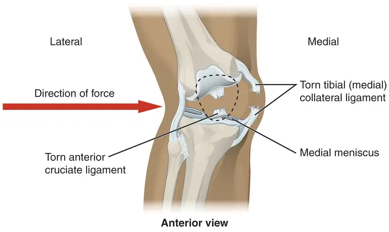
Interactive
Watch this video to learn more about different knee injuries and diagnostic testing of the knee. What are the most common causes of anterior cruciate ligament injury?
Ankle and Foot Joints¶
The ankle is formed by the talocrural joint (Figure 9.21). It consists of the articulations between the talus bone of the foot and the distal ends of the tibia and fibula of the leg (crural = “leg”). The superior aspect of the talus bone is square-shaped and has three areas of articulation. The top of the talus articulates with the inferior tibia. This is the portion of the ankle joint that carries the body weight between the leg and foot. The sides of the talus are firmly held in position by the articulations with the medial malleolus of the tibia and the lateral malleolus of the fibula, which prevent any side-to-side motion of the talus. The ankle is thus a uniaxial hinge joint that allows only for dorsiflexion and plantar flexion of the foot.
Additional joints between the tarsal bones of the posterior foot allow for the movements of foot inversion and eversion. Most important for these movements is the subtalar joint, located between the talus and calcaneus bones. The joints between the talus and navicular bones and the calcaneus and cuboid bones are also important contributors to these movements. All of the joints between tarsal bones are plane joints. Together, the small motions that take place at these joints all contribute to the production of inversion and eversion foot motions.
Like the hinge joints of the elbow and knee, the talocrural joint of the ankle is supported by several strong ligaments located on the sides of the joint. These ligaments extend from the medial malleolus of the tibia or lateral malleolus of the fibula and anchor to the talus and calcaneus bones. Since they are located on the sides of the ankle joint, they allow for dorsiflexion and plantar flexion of the foot. They also prevent abnormal side-to-side and twisting movements of the talus and calcaneus bones during eversion and inversion of the foot. On the medial side is the broad deltoid ligament. The deltoid ligament supports the ankle joint and also resists excessive eversion of the foot. The lateral side of the ankle has several smaller ligaments. These include the anterior talofibular ligament and the posterior talofibular ligament, both of which span between the talus bone and the lateral malleolus of the fibula, and the calcaneofibular ligament, located between the calcaneus bone and fibula. These ligaments support the ankle and also resist excess inversion of the foot.
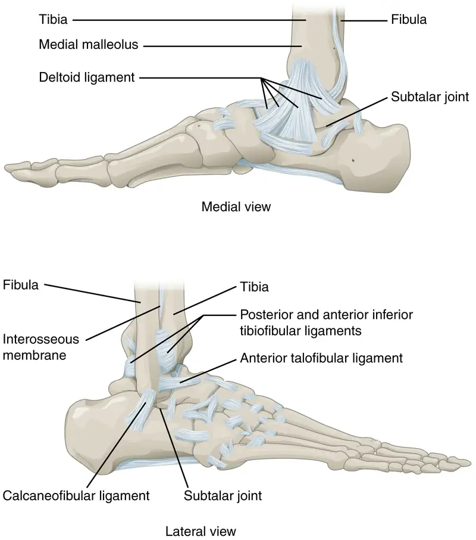
Interactive
Watch this video for a tutorial on the anatomy of the ankle joint. What are the three ligaments found on the lateral side of the ankle joint?
Interactive
Watch this video to learn more about the anatomy of the ankle joint, including bones, joints, muscles, nerves, and blood vessels. Which type of joint used in woodworking does the ankle joint resemble?
Disorders of the Joints
The ankle is the most frequently injured joint in the body, with the most common injury being an inversion ankle sprain. A sprain is the stretching or tearing of the supporting ligaments. Excess inversion causes the talus bone to tilt laterally, thus damaging the ligaments on the lateral side of the ankle. The anterior talofibular ligament is most commonly injured, followed by the calcaneofibular ligament. In severe inversion injuries, the forceful lateral movement of the talus not only ruptures the lateral ankle ligaments, but also fractures the distal fibula.
Less common are eversion sprains of the ankle, which involve stretching of the deltoid ligament on the medial side of the ankle. Forcible eversion of the foot, for example, with an awkward landing from a jump or when a football player has a foot planted and is hit on the lateral ankle, can result in a Pott’s fracture and dislocation of the ankle joint. In this injury, the very strong deltoid ligament does not tear, but instead shears off the medial malleolus of the tibia. This frees the talus, which moves laterally and fractures the distal fibula. In extreme cases, the posterior margin of the tibia may also be sheared off.
Above the ankle, the distal ends of the tibia and fibula are united by a strong syndesmosis formed by the interosseous membrane and ligaments at the distal tibiofibular joint. These connections prevent separation between the distal ends of the tibia and fibula and maintain the talus locked into position between the medial malleolus and lateral malleolus. Injuries that produce a lateral twisting of the leg on top of the planted foot can result in stretching or tearing of the tibiofibular ligaments, producing a syndesmotic ankle sprain or “high ankle sprain.”
Most ankle sprains can be treated using the RICE technique: Rest, Ice, Compression, and Elevation. Reducing joint mobility using a brace or cast may be required for a period of time. More severe injuries involving ligament tears or bone fractures may require surgery.
Interactive
Watch this video to learn more about the ligaments of the ankle joint, ankle sprains, and treatment. During an inversion ankle sprain injury, all three ligaments that resist excessive inversion of the foot may be injured. What is the sequence in which these three ligaments are injured?
9.7 Development of Joints¶
Learning Objectives
By the end of this section, you will be able to:
- Describe the two processes by which mesenchyme can give rise to bone
- Discuss the process by which joints of the limbs are formed
Joints form during embryonic development in conjunction with the formation and growth of the associated bones. The embryonic tissue that gives rise to all bones, cartilages, and connective tissues of the body is called mesenchyme. In the head, mesenchyme will accumulate at those areas that will become the bones that form the top and sides of the skull. The mesenchyme in these areas will develop directly into bone through the process of intramembranous ossification, in which mesenchymal cells differentiate into bone-producing cells that then generate bone tissue. The mesenchyme between the areas of bone production will become the fibrous connective tissue that fills the spaces between the developing bones. Initially, the connective tissue-filled gaps between the bones are wide, and are called fontanelles. After birth, as the skull bones grow and enlarge, the gaps between them decrease in width and the fontanelles are reduced to suture joints in which the bones are united by a narrow layer of fibrous connective tissue.
The bones that form the base and facial regions of the skull develop through the process of endochondral ossification. In this process, mesenchyme accumulates and differentiates into hyaline cartilage, which forms a model of the future bone. The hyaline cartilage model is then gradually, over a period of many years, displaced by bone. The mesenchyme between these developing bones becomes the fibrous connective tissue of the suture joints between the bones in these regions of the skull.
A similar process of endochondral ossification gives rises to the bones and joints of the limbs. The limbs initially develop as small limb buds that appear on the sides of the embryo around the end of the fourth week of development. Starting during the sixth week, as each limb bud continues to grow and elongate, areas of mesenchyme within the bud begin to differentiate into the hyaline cartilage that will form models for of each of the future bones. The synovial joints will form between the adjacent cartilage models, in an area called the joint interzone. Cells at the center of this interzone region undergo cell death to form the joint cavity, while surrounding mesenchyme cells will form the articular capsule and supporting ligaments. The process of endochondral ossification, which converts the cartilage models into bone, begins by the twelfth week of embryonic development. At birth, ossification of much of the bone has occurred, but the hyaline cartilage of the epiphyseal plate will remain throughout childhood and adolescence to allow for bone lengthening. Hyaline cartilage is also retained as the articular cartilage that covers the surfaces of the bones at synovial joints.
Chapter Review¶
Key Terms¶
- abduction
- movement in the coronal plane that moves a limb laterally away from the body; spreading of the fingers
- acetabular labrum
- lip of fibrocartilage that surrounds outer margin of the acetabulum on the hip bone
- adduction
- movement in the coronal plane that moves a limb medially toward or across the midline of the body; bringing fingers together
- amphiarthrosis
- slightly mobile joint
- annular ligament
- intrinsic ligament of the elbow articular capsule that surrounds and supports the head of the radius at the proximal radioulnar joint
- anterior cruciate ligament
- intracapsular ligament of the knee; extends from anterior, superior surface of the tibia to the inner aspect of the lateral condyle of the femur; resists hyperextension of knee
- anterior talofibular ligament
- intrinsic ligament located on the lateral side of the ankle joint, between talus bone and lateral malleolus of fibula; supports talus at the talocrural joint and resists excess inversion of the foot
- articular capsule
- connective tissue structure that encloses the joint cavity of a synovial joint
- articular cartilage
- thin layer of hyaline cartilage that covers the articulating surfaces of bones at a synovial joint
- articular disc
- meniscus; a fibrocartilage structure found between the bones of some synovial joints; provides padding or smooths movements between the bones; strongly unites the bones together
- articulation
- joint of the body
- atlanto-occipital joint
- articulation between the occipital condyles of the skull and the superior articular processes of the atlas (C1 vertebra)
- atlantoaxial joint
- series of three articulations between the atlas (C1) vertebra and the axis (C2) vertebra, consisting of the joints between the inferior articular processes of C1 and the superior articular processes of C2, and the articulation between the dens of C2 and the anterior arch of C1
- ball-and-socket joint
- synovial joint formed between the spherical end of one bone (the ball) that fits into the depression of a second bone (the socket); found at the hip and shoulder joints; functionally classified as a multiaxial joint
- biaxial joint
- type of diarthrosis; a joint that allows for movements within two planes (two axes)
- bursa
- connective tissue sac containing lubricating fluid that prevents friction between adjacent structures, such as skin and bone, tendons and bone, or between muscles
- calcaneofibular ligament
- intrinsic ligament located on the lateral side of the ankle joint, between the calcaneus bone and lateral malleolus of the fibula; supports the talus bone at the ankle joint and resists excess inversion of the foot
- cartilaginous joint
- joint at which the bones are united by hyaline cartilage (synchondrosis) or fibrocartilage (symphysis)
- circumduction
- circular motion of the arm, thigh, hand, thumb, or finger that is produced by the sequential combination of flexion, abduction, extension, and adduction
- condyloid joint
- synovial joint in which the shallow depression at the end of one bone receives a rounded end from a second bone or a rounded structure formed by two bones; found at the metacarpophalangeal joints of the fingers or the radiocarpal joint of the wrist; functionally classified as a biaxial joint
- coracohumeral ligament
- intrinsic ligament of the shoulder joint; runs from the coracoid process of the scapula to the anterior humerus
- deltoid ligament
- broad intrinsic ligament located on the medial side of the ankle joint; supports the talus at the talocrural joint and resists excess eversion of the foot
- depression
- downward (inferior) motion of the scapula or mandible
- diarthrosis
- freely mobile joint
- dorsiflexion
- movement at the ankle that brings the top of the foot toward the anterior leg
- elbow joint
- humeroulnar joint
- elevation
- upward (superior) motion of the scapula or mandible
- eversion
- foot movement involving the intertarsal joints of the foot in which the bottom of the foot is turned laterally, away from the midline
- extension
- movement in the sagittal plane that increases the angle of a joint (straightens the joint); motion involving posterior bending of the vertebral column or returning to the upright position from a flexed position
- extrinsic ligament
- ligament located outside of the articular capsule of a synovial joint
- femoropatellar joint
- portion of the knee joint consisting of the articulation between the distal femur and the patella
- fibrous joint
- joint where the articulating areas of the adjacent bones are connected by fibrous connective tissue
- fibular collateral ligament
- extrinsic ligament of the knee joint that spans from the lateral epicondyle of the femur to the head of the fibula; resists hyperextension and rotation of the extended knee
- flexion
- movement in the sagittal plane that decreases the angle of a joint (bends the joint); motion involving anterior bending of the vertebral column
- fontanelles
- expanded areas of fibrous connective tissue that separate the braincase bones of the skull prior to birth and during the first year after birth
- glenohumeral joint
- shoulder joint; articulation between the glenoid cavity of the scapula and head of the humerus; multiaxial ball-and-socket joint that allows for flexion/extension, abduction/adduction, circumduction, and medial/lateral rotation of the humerus
- glenohumeral ligament
- one of the three intrinsic ligaments of the shoulder joint that strengthen the anterior articular capsule
- glenoid labrum
- lip of fibrocartilage located around the outside margin of the glenoid cavity of the scapula
- gomphosis
- type of fibrous joint in which the root of a tooth is anchored into its bony jaw socket by strong periodontal ligaments
- hinge joint
- synovial joint at which the convex surface of one bone articulates with the concave surface of a second bone; includes the elbow, knee, ankle, and interphalangeal joints; functionally classified as a uniaxial joint
- humeroradial joint
- articulation between the capitulum of the humerus and head of the radius
- humeroulnar joint
- articulation between the trochlea of humerus and the trochlear notch of the ulna; uniaxial hinge joint that allows for flexion/extension of the forearm
- hyperextension
- excessive extension of joint, beyond the normal range of movement
- hyperflexion
- excessive flexion of joint, beyond the normal range of movement
- iliofemoral ligament
- intrinsic ligament spanning from the ilium of the hip bone to the femur, on the superior-anterior aspect of the hip joint
- inferior rotation
- movement of the scapula during upper limb adduction in which the glenoid cavity of the scapula moves in a downward direction as the medial end of the scapular spine moves in an upward direction
- interosseous membrane
- wide sheet of fibrous connective tissue that fills the gap between two parallel bones, forming a syndesmosis; found between the radius and ulna of the forearm and between the tibia and fibula of the leg
- intracapsular ligament
- ligament that is located within the articular capsule of a synovial joint
- intrinsic ligament
- ligament that is fused to or incorporated into the wall of the articular capsule of a synovial joint
- inversion
- foot movement involving the intertarsal joints of the foot in which the bottom of the foot is turned toward the midline
- ischiofemoral ligament
- intrinsic ligament spanning from the ischium of the hip bone to the femur, on the posterior aspect of the hip joint
- joint
- site at which two or more bones or bone and cartilage come together (articulate)
- joint cavity
- space enclosed by the articular capsule of a synovial joint that is filled with synovial fluid and contains the articulating surfaces of the adjacent bones
- joint interzone
- site within a growing embryonic limb bud that will become a synovial joint
- lateral (external) rotation
- movement of the arm at the shoulder joint or the thigh at the hip joint that moves the anterior surface of the limb away from the midline of the body
- lateral excursion
- side-to-side movement of the mandible away from the midline, toward either the right or left side
- lateral flexion
- bending of the neck or body toward the right or left side
- lateral meniscus
- C-shaped fibrocartilage articular disc located at the knee, between the lateral condyle of the femur and the lateral condyle of the tibia
- lateral tibiofemoral joint
- portion of the knee consisting of the articulation between the lateral condyle of the tibia and the lateral condyle of the femur; allows for flexion/extension at the knee
- ligament
- strong band of dense connective tissue spanning between bones
- ligament of the head of the femur
- intracapsular ligament that runs from the acetabulum of the hip bone to the head of the femur
- medial (internal) rotation
- movement of the arm at the shoulder joint or the thigh at the hip joint that brings the anterior surface of the limb toward the midline of the body
- medial excursion
- side-to-side movement that returns the mandible to the midline
- medial meniscus
- C-shaped fibrocartilage articular disc located at the knee, between the medial condyle of the femur and medial condyle of the tibia
- medial tibiofemoral joint
- portion of the knee consisting of the articulation between the medial condyle of the tibia and the medial condyle of the femur; allows for flexion/extension at the knee
- meniscus
- articular disc
- multiaxial joint
- type of diarthrosis; a joint that allows for movements within three planes (three axes)
- opposition
- thumb movement that brings the tip of the thumb in contact with the tip of a finger
- patellar ligament
- ligament spanning from the patella to the anterior tibia; serves as the final attachment for the quadriceps femoris muscle
- periodontal ligament
- band of dense connective tissue that anchors the root of a tooth into the bony jaw socket
- pivot joint
- synovial joint at which the rounded portion of a bone rotates within a ring formed by a ligament and an articulating bone; functionally classified as uniaxial joint
- plane joint
- synovial joint formed between the flattened articulating surfaces of adjacent bones; functionally classified as a multiaxial joint
- plantar flexion
- foot movement at the ankle in which the heel is lifted off of the ground
- posterior cruciate ligament
- intracapsular ligament of the knee; extends from the posterior, superior surface of the tibia to the inner aspect of the medial condyle of the femur; prevents anterior displacement of the femur when the knee is flexed and weight bearing
- posterior talofibular ligament
- intrinsic ligament located on the lateral side of the ankle joint, between the talus bone and lateral malleolus of the fibula; supports the talus at the talocrural joint and resists excess inversion of the foot
- pronated position
- forearm position in which the palm faces backward
- pronation
- forearm motion that moves the palm of the hand from the palm forward to the palm backward position
- protraction
- anterior motion of the scapula or mandible
- proximal radioulnar joint
- articulation between head of radius and radial notch of ulna; uniaxial pivot joint that allows for rotation of radius during pronation/supination of forearm
- pubofemoral ligament
- intrinsic ligament spanning from the pubis of the hip bone to the femur, on the anterior-inferior aspect of the hip joint
- radial collateral ligament
- intrinsic ligament on the lateral side of the elbow joint; runs from the lateral epicondyle of humerus to merge with the annular ligament
- reposition
- movement of the thumb from opposition back to the anatomical position (next to index finger)
- retraction
- posterior motion of the scapula or mandible
- rotation
- movement of a bone around a central axis (atlantoaxial joint) or around its long axis (proximal radioulnar joint; shoulder or hip joint); twisting of the vertebral column resulting from the summation of small motions between adjacent vertebrae
- rotator cuff
- strong connective tissue structure formed by the fusion of four rotator cuff muscle tendons to the articular capsule of the shoulder joint; surrounds and supports superior, anterior, lateral, and posterior sides of the humeral head
- saddle joint
- synovial joint in which the articulating ends of both bones are convex and concave in shape, such as at the first carpometacarpal joint at the base of the thumb; functionally classified as a biaxial joint
- subacromial bursa
- bursa that protects the supraspinatus muscle tendon and superior end of the humerus from rubbing against the acromion of the scapula
- subcutaneous bursa
- bursa that prevents friction between skin and an underlying bone
- submuscular bursa
- bursa that prevents friction between bone and a muscle or between adjacent muscles
- subscapular bursa
- bursa that prevents rubbing of the subscapularis muscle tendon against the scapula
- subtalar joint
- articulation between the talus and calcaneus bones of the foot; allows motions that contribute to inversion/eversion of the foot
- subtendinous bursa
- bursa that prevents friction between bone and a muscle tendon
- superior rotation
- movement of the scapula during upper limb abduction in which the glenoid cavity of the scapula moves in an upward direction as the medial end of the scapular spine moves in a downward direction
- supinated position
- forearm position in which the palm faces anteriorly (anatomical position)
- supination
- forearm motion that moves the palm of the hand from the palm backward to the palm forward position
- suture
- fibrous joint that connects the bones of the skull (except the mandible); an immobile joint (synarthrosis)
- symphysis
- type of cartilaginous joint where the bones are joined by fibrocartilage
- synarthrosis
- immobile or nearly immobile joint
- synchondrosis
- type of cartilaginous joint where the bones are joined by hyaline cartilage
- syndesmosis
- type of fibrous joint in which two separated, parallel bones are connected by an interosseous membrane
- synostosis
- site at which adjacent bones or bony components have fused together
- synovial fluid
- thick, lubricating fluid that fills the interior of a synovial joint
- synovial joint
- joint at which the articulating surfaces of the bones are located within a joint cavity formed by an articular capsule
- synovial membrane
- thin layer that lines the inner surface of the joint cavity at a synovial joint; produces the synovial fluid
- talocrural joint
- ankle joint; articulation between the talus bone of the foot and medial malleolus of the tibia, distal tibia, and lateral malleolus of the fibula; a uniaxial hinge joint that allows only for dorsiflexion and plantar flexion of the foot
- temporomandibular joint (TMJ)
- articulation between the condyle of the mandible and the mandibular fossa and articular tubercle of the temporal bone of the skull; allows for depression/elevation (opening/closing of mouth), protraction/retraction, and side-to-side motions of the mandible
- tendon
- dense connective tissue structure that anchors a muscle to bone
- tendon sheath
- connective tissue that surrounds a tendon at places where the tendon crosses a joint; contains a lubricating fluid to prevent friction and allow smooth movements of the tendon
- tibial collateral ligament
- extrinsic ligament of knee joint that spans from the medial epicondyle of the femur to the medial tibia; resists hyperextension and rotation of extended knee
- ulnar collateral ligament
- intrinsic ligament on the medial side of the elbow joint; spans from the medial epicondyle of the humerus to the medial ulna
- uniaxial joint
- type of diarthrosis; joint that allows for motion within only one plane (one axis)
- zygapophysial joints
- facet joints; plane joints between the superior and inferior articular processes of adjacent vertebrae that provide for only limited motions between the vertebrae
Chapter Review¶
9.1 Classification of Joints¶
Structural classifications of the body joints are based on how the bones are held together and articulate with each other. At fibrous joints, the adjacent bones are directly united to each other by fibrous connective tissue. Similarly, at a cartilaginous joint, the adjacent bones are united by cartilage. In contrast, at a synovial joint, the articulating bone surfaces are not directly united to each other, but come together within a fluid-filled joint cavity.
The functional classification of body joints is based on the degree of movement found at each joint. A synarthrosis is a joint that is essentially immobile. This type of joint provides for a strong connection between the adjacent bones, which serves to protect internal structures such as the brain or heart. Examples include the fibrous joints of the skull sutures and the cartilaginous manubriosternal joint. A joint that allows for limited movement is an amphiarthrosis. An example is the pubic symphysis of the pelvis, the cartilaginous joint that strongly unites the right and left hip bones of the pelvis. The cartilaginous joints in which vertebrae are united by intervertebral discs provide for small movements between the adjacent vertebrae and are also an amphiarthrosis type of joint. Thus, based on their movement ability, both fibrous and cartilaginous joints are functionally classified as a synarthrosis or amphiarthrosis.
The most common type of joint is the diarthrosis, which is a freely moveable joint. All synovial joints are functionally classified as diarthroses. A uniaxial diarthrosis, such as the elbow, is a joint that only allows for movement within a single anatomical plane. Joints that allow for movements in two planes are biaxial joints, such as the metacarpophalangeal joints of the fingers. A multiaxial joint, such as the shoulder or hip joint, allows for three planes of motions.
9.2 Fibrous Joints¶
Fibrous joints are where adjacent bones are strongly united by fibrous connective tissue. The gap filled by connective tissue may be narrow or wide. The three types of fibrous joints are sutures, gomphoses, and syndesmoses. A suture is the narrow fibrous joint that unites most bones of the skull. At a gomphosis, the root of a tooth is anchored across a narrow gap by periodontal ligaments to the walls of its socket in the bony jaw. A syndesmosis is the type of fibrous joint found between parallel bones. The gap between the bones may be wide and filled with a fibrous interosseous membrane, or it may narrow with ligaments spanning between the bones. Syndesmoses are found between the bones of the forearm (radius and ulna) and the leg (tibia and fibula). Fibrous joints strongly unite adjacent bones and thus serve to provide protection for internal organs, strength to body regions, or weight-bearing stability.
9.3 Cartilaginous Joints¶
There are two types of cartilaginous joints. A synchondrosis is formed when the adjacent bones are united by hyaline cartilage. A temporary synchondrosis is formed by the epiphyseal plate of a growing long bone, which is lost when the epiphyseal plate ossifies as the bone reaches maturity. The synchondrosis is thus replaced by a synostosis. Permanent synchondroses that do not ossify are found at the first sternocostal joint and between the anterior ends of the bony ribs and the junction with their costal cartilage. A symphysis is where the bones are joined by fibrocartilage and the gap between the bones may be narrow or wide. A narrow symphysis is found at the manubriosternal joint and at the pubic symphysis. A wide symphysis is the intervertebral symphysis in which the bodies of adjacent vertebrae are united by an intervertebral disc.
9.4 Synovial Joints¶
Synovial joints are the most common type of joints in the body. They are characterized by the presence of a joint cavity, inside of which the bones of the joint articulate with each other. The articulating surfaces of the bones at a synovial joint are not directly connected to each other by connective tissue or cartilage, which allows the bones to move freely against each other. The walls of the joint cavity are formed by the articular capsule. Friction between the bones is reduced by a thin layer of articular cartilage covering the surfaces of the bones, and by a lubricating synovial fluid, which is secreted by the synovial membrane.
Synovial joints are strengthened by the presence of ligaments, which hold the bones together and resist excessive or abnormal movements of the joint. Ligaments are classified as extrinsic ligaments if they are located outside of the articular capsule, intrinsic ligaments if they are fused to the wall of the articular capsule, or intracapsular ligaments if they are located inside the articular capsule. Some synovial joints also have an articular disc (meniscus), which can provide padding between the bones, smooth their movements, or strongly join the bones together to strengthen the joint. Muscles and their tendons acting across a joint can also increase their contractile strength when needed, thus providing indirect support for the joint.
Bursae contain a lubricating fluid that serves to reduce friction between structures. Subcutaneous bursae prevent friction between the skin and an underlying bone, submuscular bursae protect muscles from rubbing against a bone or another muscle, and a subtendinous bursa prevents friction between bone and a muscle tendon. Tendon sheaths contain a lubricating fluid and surround tendons to allow for smooth movement of the tendon as it crosses a joint.
Based on the shape of the articulating bone surfaces and the types of movement allowed, synovial joints are classified into six types. At a pivot joint, one bone is held within a ring by a ligament and its articulation with a second bone. Pivot joints only allow for rotation around a single axis. These are found at the articulation between the C1 (atlas) and the dens of the C2 (axis) vertebrae, which provides the side-to-side rotation of the head, or at the proximal radioulnar joint between the head of the radius and the radial notch of the ulna, which allows for rotation of the radius during forearm movements. Hinge joints, such as at the elbow, knee, ankle, or interphalangeal joints between phalanx bones of the fingers and toes, allow only for bending and straightening of the joint. Pivot and hinge joints are functionally classified as uniaxial joints.
Condyloid joints are found where the shallow depression of one bone receives a rounded bony area formed by one or two bones. Condyloid joints are found at the base of the fingers (metacarpophalangeal joints) and at the wrist (radiocarpal joint). At a saddle joint, the articulating bones fit together like a rider and a saddle. An example is the first carpometacarpal joint located at the base of the thumb. Both condyloid and saddle joints are functionally classified as biaxial joints.
Plane joints are formed between the small, flattened surfaces of adjacent bones. These joints allow the bones to slide or rotate against each other, but the range of motion is usually slight and tightly limited by ligaments or surrounding bones. This type of joint is found between the articular processes of adjacent vertebrae, at the acromioclavicular joint, or at the intercarpal joints of the hand and intertarsal joints of the foot. Ball-and-socket joints, in which the rounded head of a bone fits into a large depression or socket, are found at the shoulder and hip joints. Both plane and ball-and-sockets joints are classified functionally as multiaxial joints. However, ball-and-socket joints allow for large movements, while the motions between bones at a plane joint are small.
9.5 Types of Body Movements¶
The variety of movements provided by the different types of synovial joints allows for a large range of body motions and gives you tremendous mobility. These movements allow you to flex or extend your body or limbs, medially rotate and adduct your arms and flex your elbows to hold a heavy object against your chest, raise your arms above your head, rotate or shake your head, and bend to touch the toes (with or without bending your knees).
Each of the different structural types of synovial joints also allow for specific motions. The atlantoaxial pivot joint provides side-to-side rotation of the head, while the proximal radioulnar articulation allows for rotation of the radius during pronation and supination of the forearm. Hinge joints, such as at the knee and elbow, allow only for flexion and extension. Similarly, the hinge joint of the ankle only allows for dorsiflexion and plantar flexion of the foot.
Condyloid and saddle joints are biaxial. These allow for flexion and extension, and abduction and adduction. The sequential combination of flexion, adduction, extension, and abduction produces circumduction. Multiaxial plane joints provide for only small motions, but these can add together over several adjacent joints to produce body movement, such as inversion and eversion of the foot. Similarly, plane joints allow for flexion, extension, and lateral flexion movements of the vertebral column. The multiaxial ball and socket joints allow for flexion-extension, abduction-adduction, and circumduction. In addition, these also allow for medial (internal) and lateral (external) rotation. Ball-and-socket joints have the greatest range of motion of all synovial joints.
9.6 Anatomy of Selected Synovial Joints¶
Although synovial joints share many common features, each joint of the body is specialized for certain movements and activities. The joints of the upper limb provide for large ranges of motion, which give the upper limb great mobility, thus enabling actions such as the throwing of a ball or typing on a keyboard. The joints of the lower limb are more robust, giving them greater strength and the stability needed to support the body weight during running, jumping, or kicking activities.
The joints of the vertebral column include the symphysis joints formed by each intervertebral disc and the plane synovial joints between the superior and inferior articular processes of adjacent vertebrae. Each of these joints provide for limited motions, but these sum together to produce flexion, extension, lateral flexion, and rotation of the neck and body. The range of motions available in each region of the vertebral column varies, with all of these motions available in the cervical region. Only rotation is allowed in the thoracic region, while the lumbar region has considerable extension, flexion, and lateral flexion, but rotation is prevented. The atlanto-occipital joint allows for flexion and extension of the head, while the atlantoaxial joint is a pivot joint that provides for rotation of the head.
The temporomandibular joint is the articulation between the condyle of the mandible and the mandibular fossa and articular tubercle of the skull temporal bone. An articular disc is located between the bony components of this joint. A combination of gliding and hinge motions of the mandibular condyle allows for elevation/depression, protraction/retraction, and side-to-side motions of the lower jaw.
The glenohumeral (shoulder) joint is a multiaxial ball-and-socket joint that provides flexion/extension, abduction/adduction, circumduction, and medial/lateral rotation of the humerus. The head of the humerus articulates with the glenoid cavity of the scapula. The glenoid labrum extends around the margin of the glenoid cavity. Intrinsic ligaments, including the coracohumeral ligament and glenohumeral ligaments, provide some support for the shoulder joint. However, the primary support comes from muscles crossing the joint whose tendons form the rotator cuff. These muscle tendons are protected from friction against the scapula by the subacromial bursa and subscapular bursa.
The elbow is a uniaxial hinge joint that allows for flexion/extension of the forearm. It includes the humeroulnar joint and the humeroradial joint. The medial elbow is supported by the ulnar collateral ligament and the radial collateral ligament supports the lateral side. These ligaments prevent side-to-side movements and resist hyperextension of the elbow. The proximal radioulnar joint is a pivot joint that allows for rotation of the radius during pronation/supination of the forearm. The annular ligament surrounds the head of the radius to hold it in place at this joint.
The hip joint is a ball-and-socket joint whose motions are more restricted than at the shoulder to provide greater stability during weight bearing. The hip joint is the articulation between the head of the femur and the acetabulum of the hip bone. The acetabulum is deepened by the acetabular labrum. The iliofemoral, pubofemoral, and ischiofemoral ligaments strongly support the hip joint in the upright, standing position. The ligament of the head of the femur provides little support but carries an important artery that supplies the femur.
The knee includes three articulations. The femoropatellar joint is between the patella and distal femur. The patella, a sesamoid bone incorporated into the tendon of the quadriceps femoris muscle of the anterior thigh, serves to protect this tendon from rubbing against the distal femur during knee movements. The medial and lateral tibiofemoral joints, between the condyles of the femur and condyles of the tibia, are modified hinge joints that allow for knee extension and flexion. During these movements, the condyles of the femur both roll and glide over the surface of the tibia. As the knee comes into full extension, a slight medial rotation of the femur serves to “lock” the knee into its most stable, weight-bearing position. The reverse motion, a small lateral rotation of the femur, is required to initiate knee flexion. When the knee is flexed, some rotation of the leg is available.
Two extrinsic ligaments, the tibial collateral ligament on the medial side and the fibular collateral ligament on the lateral side, serve to resist hyperextension or rotation of the extended knee joint. Two intracapsular ligaments, the anterior cruciate ligament and posterior cruciate ligament, span between the tibia and the inner aspects of the femoral condyles. The anterior cruciate ligament resists hyperextension of the knee, while the posterior cruciate ligament prevents anterior sliding of the femur, thus supporting the knee when it is flexed and weight bearing. The medial and lateral menisci, located between the femoral and tibial condyles, are articular discs that provide padding and improve the fit between the bones.
The talocrural joint forms the ankle. It consists of the articulation between the talus bone and the medial malleolus of the tibia, the distal end of the tibia, and the lateral malleolus of the fibula. This is a uniaxial hinge joint that allows only dorsiflexion and plantar flexion of the foot. Gliding motions at the subtalar and intertarsal joints of the foot allow for inversion/eversion of the foot. The ankle joint is supported on the medial side by the deltoid ligament, which prevents side-to-side motions of the talus at the talocrural joint and resists excessive eversion of the foot. The lateral ankle is supported by the anterior and posterior talofibular ligaments and the calcaneofibular ligament. These support the ankle joint and also resist excess inversion of the foot. An inversion ankle sprain, a common injury, will result in injury to one or more of these lateral ankle ligaments.
9.7 Development of Joints¶
During embryonic growth, bones and joints develop from mesenchyme, an embryonic tissue that gives rise to bone, cartilage, and fibrous connective tissues. In the skull, the bones develop either directly from mesenchyme through the process of intramembranous ossification, or indirectly through endochondral ossification, which initially forms a hyaline cartilage model of the future bone, which is later converted into bone. In both cases, the mesenchyme between the developing bones differentiates into fibrous connective tissue that will unite the skull bones at suture joints. In the limbs, mesenchyme accumulations within the growing limb bud will become a hyaline cartilage model for each of the limb bones. A joint interzone will develop between these areas of cartilage. Mesenchyme cells at the margins of the interzone will give rise to the articular capsule, while cell death at the center forms the space that will become the joint cavity of the future synovial joint. The hyaline cartilage model of each limb bone will eventually be converted into bone via the process of endochondral ossification. However, hyaline cartilage will remain, covering the ends of the adult bone as the articular cartilage.
Review Questions¶
9.1 Classification of Joints¶
1. The joint between adjacent vertebrae that includes an invertebral disc is classified as which type of joint?
- diarthrosis
- multiaxial
- amphiarthrosis
- synarthrosis
Answer
C
2. Which of these joints is classified as a synarthrosis?
- the pubic symphysis
- the manubriosternal joint
- an invertebral disc
- the shoulder joint
Answer
B
3. Which of these joints is classified as a biaxial diarthrosis?
- the metacarpophalangeal joint
- the hip joint
- the elbow joint
- the pubic symphysis
Answer
A
4. Synovial joints ________.
- may be functionally classified as a synarthrosis
- are joints where the bones are connected to each other by hyaline cartilage
- may be functionally classified as an amphiarthrosis
- are joints where the bones articulate with each other within a fluid-filled joint cavity
Answer
D
9.2 Fibrous Joints¶
5. Which type of fibrous joint connects the tibia and fibula?
- syndesmosis
- symphysis
- suture
- gomphosis
Answer
A
6. An example of a wide fibrous joint is ________.
- the interosseous membrane of the forearm
- a gomphosis
- a suture joint
- a synostosis
Answer
A
7. A gomphosis ________.
- is formed by an interosseous membrane
- connects the tibia and fibula bones of the leg
- contains a joint cavity
- anchors a tooth to the jaw
Answer
D
8. A syndesmosis is ________.
- a narrow fibrous joint
- the type of joint that unites bones of the skull
- a fibrous joint that unites parallel bones
- the type of joint that anchors the teeth in the jaws
Answer
C
9.3 Cartilaginous Joints¶
9. A cartilaginous joint ________.
- has a joint cavity
- is called a symphysis when the bones are united by fibrocartilage
- anchors the teeth to the jaws
- is formed by a wide sheet of fibrous connective tissue
Answer
B
10. A synchondrosis is ________.
- found at the pubic symphysis
- where bones are connected together with fibrocartilage
- a type of fibrous joint
- found at the first sternocostal joint of the thoracic cage
Answer
D
11. Which of the following are joined by a symphysis?
- adjacent vertebrae
- the first rib and the sternum
- the end and shaft of a long bone
- the radius and ulna bones
Answer
A
12. The epiphyseal plate of a growing long bone in a child is classified as a ________.
- synchondrosis
- synostosis
- symphysis
- syndesmosis
Answer
A
9.4 Synovial Joints¶
13. Which type of joint provides the greatest range of motion?
- ball-and-socket
- hinge
- condyloid
- plane
Answer
A
14. Which type of joint allows for only uniaxial movement?
- saddle joint
- hinge joint
- condyloid joint
- ball-and-socket joint
Answer
B
15. Which of the following is a type of synovial joint?
- a synostosis
- a suture
- a plane joint
- a synchondrosis
Answer
C
16. A bursa ________.
- surrounds a tendon at the point where the tendon crosses a joint
- secretes the lubricating fluid for a synovial joint
- prevents friction between skin and bone, or a muscle tendon and bone
- is the strong band of connective tissue that holds bones together at a synovial joint
Answer
C
17. At synovial joints, ________.
- the articulating ends of the bones are directly connected by fibrous connective tissue
- the ends of the bones are enclosed within a space called a subcutaneous bursa
- intrinsic ligaments are located entirely inside of the articular capsule
- the joint cavity is filled with a thick, lubricating fluid
Answer
D
18. At a synovial joint, the synovial membrane ________.
- forms the fibrous connective walls of the joint cavity
- is the layer of cartilage that covers the articulating surfaces of the bones
- forms the intracapsular ligaments
- secretes the lubricating synovial fluid
Answer
D
19. Condyloid joints ________.
- are a type of ball-and-socket joint
- include the radiocarpal joint
- are a uniaxial diarthrosis joint
- are found at the proximal radioulnar joint
Answer
B
20. A meniscus is ________.
- a fibrocartilage pad that provides padding between bones
- a fluid-filled space that prevents friction between a muscle tendon and underlying bone
- the articular cartilage that covers the ends of a bone at a synovial joint
- the lubricating fluid within a synovial joint
Answer
A
9.5 Types of Body Movements¶
21. The joints between the articular processes of adjacent vertebrae can contribute to which movement?
- lateral flexion
- circumduction
- dorsiflexion
- abduction
Answer
A
22. Which motion moves the bottom of the foot away from the midline of the body?
- elevation
- dorsiflexion
- eversion
- plantar flexion
Answer
C
23. Movement of a body region in a circular movement at a condyloid joint is what type of motion?
- rotation
- elevation
- abduction
- circumduction
Answer
D
24. Supination is the motion that moves the ________.
- hand from the palm backward position to the palm forward position
- foot so that the bottom of the foot faces the midline of the body
- hand from the palm forward position to the palm backward position
- scapula in an upward direction
Answer
A
25. Movement at the shoulder joint that moves the upper limb laterally away from the body is called ________.
- elevation
- eversion
- abduction
- lateral rotation
Answer
C
9.6 Anatomy of Selected Synovial Joints¶
26. The primary support for the glenohumeral joint is provided by the ________.
- coracohumeral ligament
- glenoid labrum
- rotator cuff muscles
- subacromial bursa
Answer
C
27. The proximal radioulnar joint ________.
- is supported by the annular ligament
- contains an articular disc that strongly unites the bones
- is supported by the ulnar collateral ligament
- is a hinge joint that allows for flexion/extension of the forearm
Answer
A
28. Which statement is true concerning the knee joint?
- The lateral meniscus is an intrinsic ligament located on the lateral side of the knee joint.
- Hyperextension is resisted by the posterior cruciate ligament.
- The anterior cruciate ligament supports the knee when it is flexed and weight bearing.
- The medial meniscus is attached to the tibial collateral ligament.
Answer
D
29. The ankle joint ________.
- is also called the subtalar joint
- allows for gliding movements that produce inversion/eversion of the foot
- is a uniaxial hinge joint
- is supported by the tibial collateral ligament on the lateral side
Answer
C
30. Which region of the vertebral column has the greatest range of motion for axial rotation?
- sacral
- cervical
- lumbar
- thoracic
Answer
B
9.7 Development of Joints¶
31. Intramembranous ossification ________.
- gives rise to the bones of the limbs
- produces the bones of the top and sides of the skull
- produces the bones of the face and base of the skull
- involves the conversion of a hyaline cartilage model into bone
Answer
B
32. Synovial joints ________.
- are derived from fontanelles
- are produced by intramembranous ossification
- develop at an interzone site
- are produced by endochondral ossification
Answer
C
33. Endochondral ossification is ________.
- the process that replaces hyaline cartilage with bone tissue
- the process by which mesenchyme differentiates directly into bone tissue
- completed before birth
- the process that gives rise to the joint interzone and future joint cavity
Answer
A
Critical Thinking Questions¶
9.1 Classification of Joints¶
34. Define how joints are classified based on function. Describe and give an example for each functional type of joint.
Answer
Functional classification of joints is based on the degree of mobility exhibited by the joint. A synarthrosis is an immobile or nearly immobile joint. An example is the manubriosternal joint or the joints between the skull bones surrounding the brain. An amphiarthrosis is a slightly moveable joint, such as the pubic symphysis or an intervertebral cartilaginous joint. A diarthrosis is a freely moveable joint. These are subdivided into three categories. A uniaxial diarthrosis allows movement within a single anatomical plane or axis of motion. The elbow joint is an example. A biaxial diarthrosis, such as the metacarpophalangeal joint, allows for movement along two planes or axes. The hip and shoulder joints are examples of a multiaxial diarthrosis. These allow movements along three planes or axes.
35. Explain the reasons for why joints differ in their degree of mobility.
Answer
The functional needs of joints vary and thus joints differ in their degree of mobility. A synarthrosis, which is an immobile joint, serves to strongly connect bones thus protecting internal organs such as the heart or brain. A slightly moveable amphiarthrosis provides for small movements, which in the vertebral column can add together to yield a much larger overall movement. The freedom of movement provided by a diarthrosis can allow for large movements, such as is seen with most joints of the limbs.
9.2 Fibrous Joints¶
36. Distinguish between a narrow and wide fibrous joint and give an example of each.
Answer
Narrow fibrous joints are found at a suture, gomphosis, or syndesmosis. A suture is the fibrous joint that joins the bones of the skull to each other (except the mandible). A gomphosis is the fibrous joint that anchors each tooth to its bony socket within the upper or lower jaw. The tooth is connected to the bony jaw by periodontal ligaments. A narrow syndesmosis is found at the distal tibiofibular joint where the bones are united by fibrous connective tissue and ligaments. A syndesmosis can also form a wide fibrous joint where the shafts of two parallel bones are connected by a broad interosseous membrane. The radius and ulna bones of the forearm and the tibia and fibula bones of the leg are united by interosseous membranes.
37. The periodontal ligaments are made of collagen fibers and are responsible for connecting the roots of the teeth to the jaws. Describe how scurvy, a disease that inhibits collagen production, can affect the teeth.
Answer
The teeth are anchored into their sockets within the bony jaws by the periodontal ligaments. This is a gomphosis type of fibrous joint. In scurvy, collagen production is inhibited and the periodontal ligaments become weak. This will cause the teeth to become loose or even to fall out.
9.3 Cartilaginous Joints¶
38. Describe the two types of cartilaginous joints and give examples of each.
Answer
Cartilaginous joints are where the adjacent bones are joined by cartilage. At a synchondrosis, the bones are united by hyaline cartilage. The epiphyseal plate of growing long bones and the first sternocostal joint that unites the first rib to the sternum are examples of synchondroses. At a symphysis, the bones are joined by fibrocartilage, which is strong and flexible. Symphysis joints include the intervertebral symphysis between adjacent vertebrae and the pubic symphysis that joins the pubic portions of the right and left hip bones.
39. Both functional and structural classifications can be used to describe an individual joint. Define the first sternocostal joint and the pubic symphysis using both functional and structural characteristics.
Answer
The first sternocostal joint is a synchondrosis type of cartilaginous joint in which hyaline cartilage unites the first rib to the manubrium of the sternum. This forms an immobile (synarthrosis) type of joint. The pubic symphysis is a slightly mobile (amphiarthrosis) cartilaginous joint, where the pubic portions of the right and left hip bones are united by fibrocartilage, thus forming a symphysis.
9.4 Synovial Joints¶
40. Describe the characteristic structures found at all synovial joints.
Answer
All synovial joints have a joint cavity filled with synovial fluid that is the site at which the bones of the joint articulate with each other. The articulating surfaces of the bones are covered by articular cartilage, a thin layer of hyaline cartilage. The walls of the joint cavity are formed by the connective tissue of the articular capsule. The synovial membrane lines the interior surface of the joint cavity and secretes the synovial fluid. Synovial joints are directly supported by ligaments, which span between the bones of the joint. These may be located outside of the articular capsule (extrinsic ligaments), incorporated or fused to the wall of the articular capsule (intrinsic ligaments), or found inside of the articular capsule (intracapsular ligaments). Ligaments hold the bones together and also serve to resist or prevent excessive or abnormal movements of the joint.
41. Describe the structures that provide direct and indirect support for a synovial joint.
Answer
Direct support for a synovial joint is provided by ligaments that strongly unite the bones of the joint and serve to resist excessive or abnormal movements. Some joints, such as the sternoclavicular joint, have an articular disc that is attached to both bones, where it provides direct support by holding the bones together. Indirect joint support is provided by the muscles and their tendons that act across a joint. Muscles will increase their contractile force to help support the joint by resisting forces acting on it.
9.5 Types of Body Movements¶
42. Briefly define the types of joint movements available at a ball-and-socket joint.
Answer
Ball-and-socket joints are multiaxial joints that allow for flexion and extension, abduction and adduction, circumduction, and medial and lateral rotation.
43. Discuss the joints involved and movements required for you to cross your arms together in front of your chest.
Answer
To cross your arms, you need to use both your shoulder and elbow joints. At the shoulder, the arm would need to flex and medially rotate. At the elbow, the forearm would need to be flexed.
9.6 Anatomy of Selected Synovial Joints¶
44. Discuss the structures that contribute to support of the shoulder joint.
Answer
The shoulder joint allows for a large range of motion. The primary support for the shoulder joint is provided by the four rotator cuff muscles. These muscles serve as “dynamic ligaments” and thus can modulate their strengths of contraction as needed to hold the head of the humerus in position at the glenoid fossa. Additional but weaker support comes from the coracohumeral ligament, an intrinsic ligament that supports the superior aspect of the shoulder joint, and the glenohumeral ligaments, which are intrinsic ligaments that support the anterior side of the joint.
45. Describe the sequence of injuries that may occur if the extended, weight-bearing knee receives a very strong blow to the lateral side of the knee.
Answer
A strong blow to the lateral side of the extended knee will cause the medial side of the knee joint to open, resulting in a sequence of three injuries. First will be damage to the tibial collateral ligament. Since the medial meniscus is attached to the tibial collateral ligament, the meniscus is also injured. The third structure injured would be the anterior cruciate ligament.
9.7 Development of Joints¶
46. Describe how synovial joints develop within the embryonic limb.
Answer
Mesenchyme gives rise to cartilage models of the future limb bones. An area called the joint interzone located between adjacent cartilage models will become a synovial joint. The cells at the center of the interzone die, thus producing the joint cavity. Additional mesenchyme cells at the periphery of the interzone become the articular capsule.
47. Differentiate between endochondral and intramembranous ossification.
Answer
Intramembranous ossification is the process by which mesenchymal cells differentiate directly into bone producing cells. This process produces the bones that form the top and sides of the skull. The remaining skull bones and the bones of the limbs are formed by endochondral ossification. In this, mesenchymal cells differentiate into hyaline cartilage cells that produce a cartilage model of the future bone. The cartilage is then gradually replaced by bone tissue over a period of many years, during which the cartilage of the epiphyseal plate can continue to grow to allow for enlargement or lengthening of the bone.
Interactive Link Questions¶
9.3 Cartilaginous Joints¶
48. Go to this website to view a radiograph (X-ray image) of a child’s hand and wrist. The growing bones of child have an epiphyseal plate that forms a synchondrosis between the shaft and end of a long bone. Being less dense than bone, the area of epiphyseal cartilage is seen on this radiograph as the dark epiphyseal gaps located near the ends of the long bones, including the radius, ulna, metacarpal, and phalanx bones. Which of the bones in this image do not show an epiphyseal plate (epiphyseal gap)?
Answer
Although they are still growing, the carpal bones of the wrist area do not show an epiphyseal plate. Instead of elongating, these bones grow in diameter by adding new bone to their surfaces.
9.4 Synovial Joints¶
49. Watch this video to see an animation of synovial joints in action. Synovial joints are places where bones articulate with each other inside of a joint cavity. The different types of synovial joints are the ball-and-socket joint (shoulder joint), hinge joint (knee), pivot joint (atlantoaxial joint, between C1 and C2 vertebrae of the neck), condyloid joint (radiocarpal joint of the wrist), saddle joint (first carpometacarpal joint, between the trapezium carpal bone and the first metacarpal bone, at the base of the thumb), and plane joint (facet joints of vertebral column, between superior and inferior articular processes). Which type of synovial joint allows for the widest ranges of motion?
Answer
Ball-and-socket joint.
50. Visit this website to read about a patient who arrives at the hospital with joint pain and weakness in his legs. What caused this patient’s weakness?
Answer
Gout is due to the accumulation of uric acid crystals in the body. Usually these accumulate within joints, causing joint pain. This patient also had crystals that accumulated in the space next to his spinal cord, thus compressing the spinal cord and causing muscle weakness.
51. Watch this animation to observe hip replacement surgery (total hip arthroplasty), which can be used to alleviate the pain and loss of joint mobility associated with osteoarthritis of the hip joint. What is the most common cause of hip disability?
Answer
The most common cause of hip disability is osteoarthritis, a chronic disease in which the articular cartilage of the joint wears away, resulting in severe hip pain and stiffness.
52. Watch this video to learn about the symptoms and treatments for rheumatoid arthritis. Which system of the body malfunctions in rheumatoid arthritis and what does this cause?
Answer
The immune system malfunctions and attacks healthy cells in the lining of your joints. This causes inflammation and pain in the joints and surrounding tissues.
9.5 Types of Body Movements¶
53. Watch this video to learn about anatomical motions. What motions involve increasing or decreasing the angle of the foot at the ankle?
Answer
Dorsiflexion of the foot at the ankle decreases the angle of the ankle joint, while plantar flexion increases the angle of the ankle joint.
9.6 Anatomy of Selected Synovial Joints¶
54. Watch this video to learn about TMJ. Opening of the mouth requires the combination of two motions at the temporomandibular joint, an anterior gliding motion of the articular disc and mandible and the downward hinging of the mandible. What is the initial movement of the mandible during opening and how much mouth opening does this produce?
Answer
The first motion is rotation (hinging) of the mandible, but this only produces about 20 mm (0.78 in) of mouth opening.
55. Watch this video for a tutorial on the anatomy of the shoulder joint. What movements are available at the shoulder joint?
Answer
The shoulder joint is a ball-and-socket joint that allows for flexion-extension, abduction-adduction, medial rotation, lateral rotation, and circumduction of the humerus.
56. Watch this video to learn about the anatomy of the shoulder joint, including bones, joints, muscles, nerves, and blood vessels. What is the shape of the glenoid labrum in cross-section, and what is the importance of this shape?
Answer
The glenoid labrum is wedge-shaped in cross-section. This is important because it creates an elevated rim around the glenoid cavity, which creates a deeper socket for the head of the humerus to fit into.
57. Watch this animation to learn more about the anatomy of the elbow joint. What structures provide the main stability for the elbow?
Answer
The structures that stabilize the elbow include the coronoid process, the radial (lateral) collateral ligament, and the anterior portion of the ulnar (medial) collateral ligament.
58. Watch this video to learn more about the anatomy of the elbow joint, including bones, joints, muscles, nerves, and blood vessels. What are the functions of the articular cartilage?
Answer
The articular cartilage functions to absorb shock and to provide an extremely smooth surface that makes movement between bones easy, without damaging the bones.
59. Watch this video for a tutorial on the anatomy of the hip joint. What is a possible consequence following a fracture of the femoral neck within the capsule of the hip joint?
Answer
An intracapsular fracture of the neck of the femur can result in disruption of the arterial blood supply to the head of the femur, which may lead to avascular necrosis of the femoral head.
60. Watch this video to learn more about the anatomy of the hip joint, including bones, joints, muscles, nerves, and blood vessels. Where is the articular cartilage thickest within the hip joint?
Answer
The articular cartilage is thickest in the upper and back part of the acetabulum, the socket portion of the hip joint. These regions receive most of the force from the head of the femur during walking and running.
61. Watch this video to learn more about the flexion and extension of the knee, as the femur both rolls and glides on the tibia to maintain stable contact between the bones in all knee positions. The patella glides along a groove on the anterior side of the distal femur. The collateral ligaments on the sides of the knee become tight in the fully extended position to help stabilize the knee. The posterior cruciate ligament supports the knee when flexed and the anterior cruciate ligament becomes tight when the knee comes into full extension to resist hyperextension. What are the ligaments that support the knee joint?
Answer
There are five ligaments associated with the knee joint. The tibial collateral ligament is located on the medial side of the knee and the fibular collateral ligament is located on the lateral side. The anterior and posterior cruciate ligaments are located inside the knee joint.
62. Watch this video to learn more about the anatomy of the knee joint, including bones, joints, muscles, nerves, and blood vessels. Which ligament of the knee keeps the tibia from sliding too far forward in relation to the femur and which ligament keeps the tibia from sliding too far backward?
Answer
The anterior cruciate ligament prevents the tibia from sliding too far forward in relation to the femur and the posterior cruciate ligament keeps the tibia from sliding too far backward.
63. Watch this video to learn more about different knee injuries and diagnostic testing of the knee. What are the most causes of anterior cruciate ligament injury?
Answer
The anterior cruciate ligament (ACL) is most commonly injured when traumatic force is applied to the knee during a twisting motion or when side standing or landing from a jump.
64. Watch this video for a tutorial on the anatomy of the ankle joint. What are the three ligaments found on the lateral side of the ankle joint?
Answer
The ligaments of the lateral ankle are the anterior and posterior talofibular ligaments and the calcaneofibular ligament. These ligaments support the ankle joint and resist excess inversion of the foot.
65. Watch this video to learn more about the anatomy of the ankle joint, including bones, joints, muscles, nerves, and blood vessels. The ankle joint resembles what type of joint used in woodworking?
Answer
Because of the square shape of the ankle joint, it has been compared to a mortise-and-tendon type of joint.
66. Watch this video to learn about the ligaments of the ankle joint, ankle sprains, and treatment. During an inversion ankle sprain injury, all three ligaments that resist excessive inversion of the foot may be injured. What is the sequence in which these three ligaments are injured?
Answer
An inversion ankle sprain may injure all three ligaments located on the lateral side of the ankle. The sequence of injury would be the anterior talofibular ligament first, followed by the calcaneofibular ligament second, and finally, the posterior talofibular ligament third.
Adapted from Anatomy and Physiology 2e by OpenStax, licensed under CC BY 4.0. Access the original for free at openstax.org. Changes: converted to the web reading format of The Open Book Project.